Chapter 14: Fluid Mechanics¶
Introduction¶
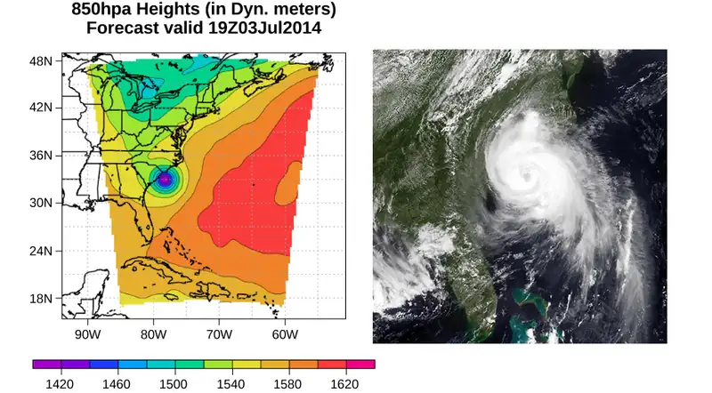
Picture yourself walking along a beach on the eastern shore of the United States. The air smells of sea salt and the sun warms your body. Suddenly, an alert appears on your cell phone. A tropical depression has formed into a hurricane. Atmospheric pressure has fallen to nearly 15% below average. As a result, forecasters expect torrential rainfall, winds in excess of 100 mph, and millions of dollars in damage. As you prepare to evacuate, you wonder: How can such a small drop in pressure lead to such a severe change in the weather?
Pressure is a physical phenomenon that is responsible for much more than just the weather. Changes in pressure cause ears to “pop” during takeoff in an airplane. Changes in pressure can also cause scuba divers to suffer a sometimes fatal disorder known as the “bends,” which occurs when nitrogen dissolved in the water of the body at extreme depths returns to a gaseous state in the body as the diver surfaces. Pressure lies at the heart of the phenomena called buoyancy, which causes hot air balloons to rise and ships to float. Before we can fully understand the role that pressure plays in these phenomena, we need to discuss the states of matter and the concept of density.
14.1 Fluids, Density, and Pressure¶
Learning Objectives
By the end of this section, you will be able to:
- State the different phases of matter
- Describe the characteristics of the phases of matter at the molecular or atomic level
- Distinguish between compressible and incompressible materials
- Define density and its related SI units
- Compare and contrast the densities of various substances
- Define pressure and its related SI units
- Explain the relationship between pressure and force
- Calculate force given pressure and area
Matter most commonly exists as a solid, liquid, or gas; these states are known as the three common phases of matter. We will look at each of these phases in detail in this section.
Characteristics of Solids¶
Solids are rigid and have specific shapes and definite volumes. The atoms or molecules in a solid are in close proximity to each other, and there is a significant force between these molecules. Solids will take a form determined by the nature of these forces between the molecules. Although true solids are not incompressible, it nevertheless requires a large force to change the shape of a solid. In some cases, the force between molecules can cause the molecules to organize into a lattice as shown in Figure 14.2. The structure of this three-dimensional lattice is represented as molecules connected by rigid bonds (modeled as stiff springs), which allow limited freedom for movement. Even a large force produces only small displacements in the atoms or molecules of the lattice, and the solid maintains its shape. Solids also resist shearing forces. (Shearing forces are forces applied tangentially to a surface, as described in Static Equilibrium and Elasticity.)
Characteristics of Fluids¶
Liquids and gases are considered to be fluids because they yield to shearing forces, whereas solids resist them. Like solids, the molecules in a liquid are bonded to neighboring molecules, but possess many fewer of these bonds. The molecules in a liquid are not locked in place and can move with respect to each other. The distance between molecules is similar to the distances in a solid, and so liquids have definite volumes, but the shape of a liquid changes, depending on the shape of its container. Gases are not bonded to neighboring atoms and can have large separations between molecules. Gases have neither specific shapes nor definite volumes, since their molecules move to fill the container in which they are held (Figure 14.2).
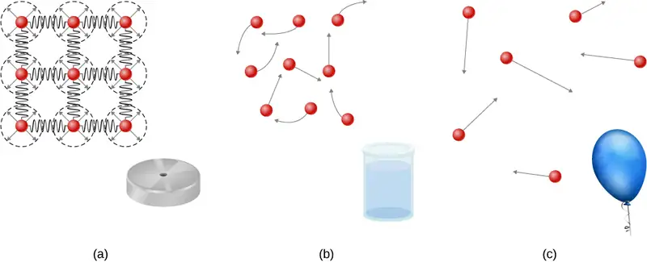
Liquids deform easily when stressed and do not spring back to their original shape once a force is removed. This occurs because the atoms or molecules in a liquid are free to slide about and change neighbors. That is, liquids flow (so they are a type of fluid), with the molecules held together by mutual attraction. When a liquid is placed in a container with no lid, it remains in the container. Because the atoms are closely packed, liquids, like solids, resist compression; an extremely large force is necessary to change the volume of a liquid.
In contrast, atoms in gases are separated by large distances, and the forces between atoms in a gas are therefore very weak, except when the atoms collide with one another. This makes gases relatively easy to compress and allows them to flow (which makes them fluids). When placed in an open container, gases, unlike liquids, will escape.
In this chapter, we generally refer to both gases and liquids simply as fluids, making a distinction between them only when they behave differently. There exists one other phase of matter, plasma, which exists at very high temperatures. At high temperatures, molecules may disassociate into atoms, and atoms disassociate into electrons (with negative charges) and protons (with positive charges), forming a plasma. Plasma will not be discussed in depth in this chapter because plasma has very different properties from the three other common phases of matter, discussed in this chapter, due to the strong electrical forces between the charges.
Density¶
Suppose a block of brass and a block of wood have exactly the same mass. If both blocks are dropped in a tank of water, why does the wood float and the brass sink (Figure 14.3)? This occurs because the brass has a greater density than water, whereas the wood has a lower density than water.
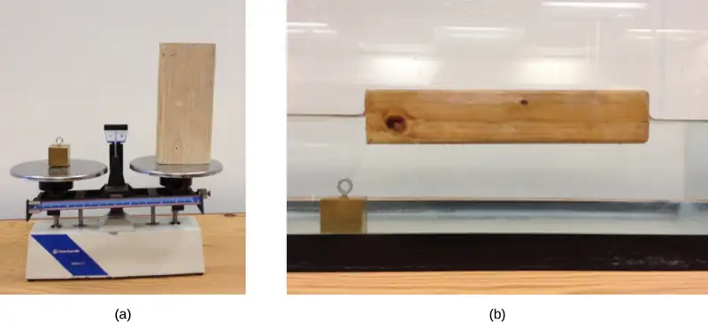
Density is an important characteristic of substances. It is crucial, for example, in determining whether an object sinks or floats in a fluid.
Density
The average density of a substance or object is defined as its mass per unit volume,
where the Greek letter \(\rho\) (rho) is the symbol for density, m is the mass, and V is the volume.
The SI unit of density is \(\text{kg/m}^{3}\). Table 14.1 lists some representative values. The cgs unit of density is the gram per cubic centimeter, \(\text{g/cm}^{3}\), where
The metric system was originally devised so that water would have a density of \(1\:\text{g/cm}^{3}\), equivalent to \({10}^{3\:}\:\text{kg/m}^{3}\). Thus, the basic mass unit, the kilogram, was first devised to be the mass of 1000 mL of water, which has a volume of \(1000\:\text{cm}^{3}\).
Table 14.1 Densities of Some Common Substances
| Solids (\(0.0{}^{\circ}\text{C}\)) |
Liquids (\(0.0{}^{\circ}\text{C}\)) |
Gases (\(0.0{}^{\circ}\text{C},\) 101.3 kPa) |
|||
|---|---|---|---|---|---|
| Substance | \(\mathbf{\rho(\text{kg/m}^{3})}\) | Substance | \(\mathbf{\rho(\text{kg/m}^{3})}\) | Substance | \(\mathbf{\rho(\text{kg/m}^{3})}\) |
| Aluminum | \(2.70\:\times\:{10}^{3}\) | Benzene | \(8.79\:\times\:{10}^{2}\) | Air | \(1.29\:\times\:{10}^{0}\) |
| Bone | \(1.90\:\times\:{10}^{3}\) | Blood | \(1.05\:\times\:{10}^{3}\) | Carbon dioxide | \(1.98\:\times\:{10}^{0}\) |
| Brass | \(8.44\:\times\:{10}^{3}\) | Ethyl alcohol | \(8.06\:\times\:{10}^{2}\) | Carbon monoxide | \(1.25\:\times\:{10}^{0}\) |
| Concrete | \(2.40\:\times\:{10}^{3}\) | Gasoline | \(6.80\:\times\:{10}^{2}\) | Helium | \(1.80\:\times\:{10}^{-1}\) |
| Copper | \(8.92\:\times\:{10}^{3}\) | Glycerin | \(1.26\:\times\:{10}^{3}\) | Hydrogen | \(9.00\:\times\:{10}^{-2}\) |
| Cork | \(2.40\:\times\:{10}^{2}\) | Mercury | \(1.36\:\times\:{10}^{4}\) | Methane | \(7.20\:\times\:{10}^{-1}\) |
| Earth’s crust | \(3.30\:\times\:{10}^{3}\) | Olive oil | \(9.20\:\times\:{10}^{2}\) | Nitrogen | \(1.25\:\times\:{10}^{0}\) |
| Glass | \(2.60\:\times\:{10}^{3}\) | Nitrous oxide | \(1.98\:\times\:{10}^{0}\) | ||
| Gold | \(1.93\:\times\:{10}^{4}\) | Oxygen | \(1.43\:\times\:{10}^{0}\) | ||
| Granite | \(2.70\:\times\:{10}^{3}\) | ||||
| Iron | \(7.86\:\times\:{10}^{3}\) | ||||
| Lead | \(1.13\:\times\:{10}^{4}\) | ||||
| Oak | \(7.10\:\times\:{10}^{2}\) | ||||
| Pine | \(3.73\:\times\:{10}^{2}\) | ||||
| Platinum | \(2.14\:\times\:{10}^{4}\) | ||||
| Polystyrene | \(1.00\:\times\:{10}^{2}\) | ||||
| Tungsten | \(1.93\:\times\:{10}^{4}\) | ||||
| Uranium | \(1.87\:\times\:{10}^{4}\) | ||||
As you can see by examining Table 14.1, the density of an object may help identify its composition. The density of gold, for example, is about 2.5 times the density of iron, which is about 2.5 times the density of aluminum. Density also reveals something about the phase of the matter and its substructure. Notice that the densities of liquids and solids are roughly comparable, consistent with the fact that their atoms are in close contact. The densities of gases are much less than those of liquids and solids, because the atoms in gases are separated by large amounts of empty space. The gases are displayed for a standard temperature of \(0.0{}^{\circ}\text{C}\) and a standard pressure of 101.3 kPa, and there is a strong dependence of the densities on temperature and pressure. The densities of the solids and liquids displayed are given for the standard temperature of \(0.0{}^{\circ}\text{C}\) and the densities of solids and liquids depend on the temperature. The density of solids and liquids normally increase with decreasing temperature.
Table 14.2 shows the density of water in various phases and temperature. The density of water increases with decreasing temperature, reaching a maximum at \(4.0{}^{\circ}\text{C,}\) and then decreases as the temperature falls below \(4.0{}^{\circ}\text{C}\). This behavior of the density of water explains why ice forms at the top of a body of water.
Table 14.2 Densities of Water
| Substance | \(\rho(\text{kg/m}^{3})\) |
|---|---|
| Ice \((0\text{°C})\) | \(9.17\:\times\:{10}^{2}\) |
| Water \((0{}^{\circ}\text{C})\) | \(9.998\:\times\:{10}^{2}\) |
| Water \((4{}^{\circ}\text{C})\) | \(1.000\:\times\:{10}^{3}\) |
| Water \((20{}^{\circ}\text{C})\) | \(9.982\:\times\:{10}^{2}\) |
| Water \((100{}^{\circ}\text{C})\) | \(9.584\:\times\:{10}^{2}\) |
| Steam \((100{}^{\circ}\text{C,}\:101.3\:\text{kPa})\) | \(1.670\:\times\:{10}^{2}\) |
| Sea water \((0{}^{\circ}\text{C})\) | \(1.030\:\times\:{10}^{3}\) |
The density of a substance is not necessarily constant throughout the volume of a substance. If the density is constant throughout a substance, the substance is said to be a homogeneous substance. A solid iron bar is an example of a homogeneous substance. The density is constant throughout, and the density of any sample of the substance is the same as its average density. If the density of a substance were not constant, the substance is said to be a heterogeneous substance. A chunk of Swiss cheese is an example of a heterogeneous material containing both the solid cheese and gas-filled voids. The density at a specific location within a heterogeneous material is called local density, and is given as a function of location, \(\rho=\rho(x,y,z)\) (Figure 14.4).
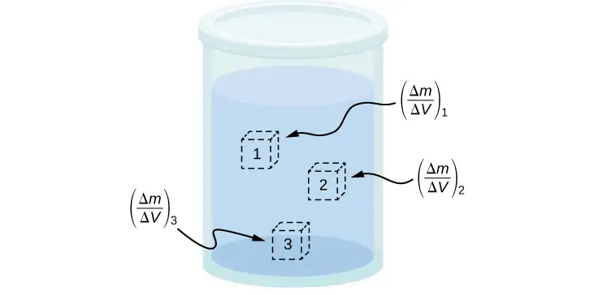
Local density can be obtained by a limiting process, based on the average density in a small volume around the point in question, taking the limit where the size of the volume approaches zero,
equation callout
where \(\rho\) is the density, m is the mass, and V is the volume.
Since gases are free to expand and contract, the densities of the gases vary considerably with temperature, whereas the densities of liquids vary little with temperature. Therefore, the densities of liquids are often treated as constant, with the density equal to the average density.
Density is a dimensional property; therefore, when comparing the densities of two substances, the units must be taken into consideration. For this reason, a more convenient, dimensionless quantity called the specific gravity is often used to compare densities. Specific gravity is defined as the ratio of the density of the material to the density of water at \(4.0\:\text{°C}\) and one atmosphere of pressure, which is \(1000\:\text{kg/m}^{3}\):
The comparison uses water because the density of water is \(1\:\text{g/cm}^{3}\), which was originally used to define the kilogram. Specific gravity, being dimensionless, provides a ready comparison among materials without having to worry about the unit of density. For instance, the density of aluminum is 2.7 in \(\text{g/cm}^{3}\) (2700 in \(\text{kg/m}^{3}\)), but its specific gravity is 2.7, regardless of the unit of density. Specific gravity is a particularly useful quantity with regard to buoyancy, which we will discuss later in this chapter.
Pressure¶
You have no doubt heard the word ‘pressure’ used in relation to blood (high or low blood pressure) and in relation to weather (high- and low-pressure weather systems). These are only two of many examples of pressure in fluids. (Recall that we introduced the idea of pressure in Static Equilibrium and Elasticity, in the context of bulk stress and strain.)
Pressure
Pressure (p) is defined as the normal force F per unit area A over which the force is applied, or
To define the pressure at a specific point, the pressure is defined as the force dF exerted by a fluid over an infinitesimal element of area dA containing the point, resulting in \(p=\frac{dF}{dA}\).
A given force can have a significantly different effect, depending on the area over which the force is exerted. For instance, a force applied to an area of \(1\:\text{mm}^{2}\) has a pressure that is 100 times as great as the same force applied to an area of \(1\:\text{cm}^{2}.\) That is why a sharp needle is able to poke through skin when a small force is exerted, but applying the same force with a finger does not puncture the skin (Figure 14.5).
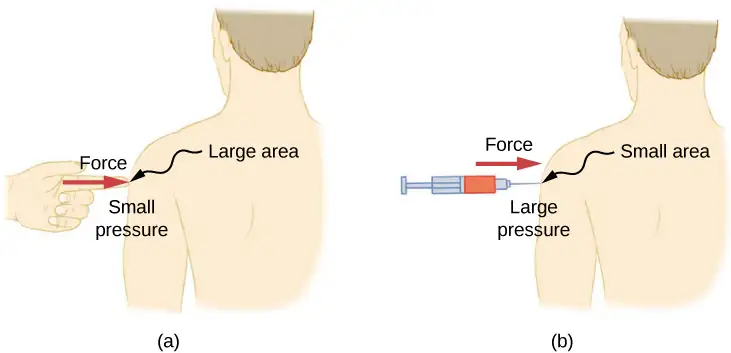
Note that although force is a vector, pressure is a scalar. Pressure is a scalar quantity because it is defined to be proportional to the magnitude of the force acting perpendicular to the surface area. The SI unit for pressure is the pascal (Pa), named after the French mathematician and physicist Blaise Pascal (1623–1662), where
Several other units are used for pressure, which we discuss later in the chapter.
Variation of pressure with depth in a fluid of constant density¶
Pressure is defined for all states of matter, but it is particularly important when discussing fluids. An important characteristic of fluids is that there is no significant resistance to the component of a force applied parallel to the surface of a fluid. The molecules of the fluid simply flow to accommodate the horizontal force. A force applied perpendicular to the surface compresses or expands the fluid. If you try to compress a fluid, you find that a reaction force develops at each point inside the fluid in the outward direction, balancing the force applied on the molecules at the boundary.
Consider a fluid of constant density as shown in Figure 14.6. The pressure at the bottom of the container is due to the pressure of the atmosphere \((p_{0})\) plus the pressure due to the weight of the fluid. The pressure due to the fluid is equal to the weight of the fluid divided by the area. The weight of the fluid is equal to its mass times the acceleration due to gravity.
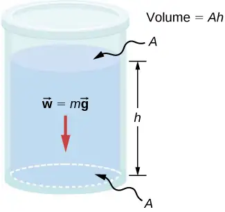
Since the density is constant, the weight can be calculated using the density:
The pressure at the bottom of the container is therefore equal to atmospheric pressure added to the weight of the fluid divided by the area:
This equation is only good for pressure at a depth for a fluid of constant density.
Pressure at a Depth for a Fluid of Constant Density
The pressure at a depth in a fluid of constant density is equal to the pressure of the atmosphere plus the pressure due to the weight of the fluid, or
Where p is the pressure at a particular depth, \(p_{0}\) is the pressure of the atmosphere, \(\rho\) is the density of the fluid, g is the acceleration due to gravity, and h is the depth.
Example 14.1 What Force Must a Dam Withstand?
Consider the pressure and force acting on the dam retaining a reservoir of water (Figure 14.7). Suppose the dam is 500-m wide and the water is 80.0-m deep at the dam, as illustrated below. (a) What is the average pressure on the dam due to the water? (b) Calculate the force exerted against the dam.
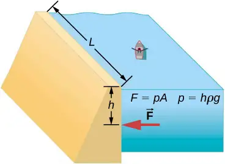
The average pressure p due to the weight of the water is the pressure at the average depth h of 40.0 m, since pressure increases linearly with depth. The force exerted on the dam by the water is the average pressure times the area of contact, \(F=pA.\)
solution
a. The average pressure due to the weight of a fluid is
Entering the density of water from Table 14.2 and taking h to be the average depth of 40.0 m, we obtain
b. We have already found the value for p. The area of the dam is
so that
Significance
Although this force seems large, it is small compared with the \(1.96\:\times\:{10}^{13}\text{N}\) weight of the water in the reservoir. In fact, it is only 0.0800% of the weight.
Check Your Understanding
If the reservoir in Example 14.1 covered twice the area, but was kept to the same depth, would the dam need to be redesigned?
Answer
The pressure found in part (a) of the example is completely independent of the width and length of the lake; it depends only on its average depth at the dam. Thus, the force depends only on the water’s average depth and the dimensions of the dam, not on the horizontal extent of the reservoir. In the diagram, note that the thickness of the dam increases with depth to balance the increasing force due to the increasing pressure.
Pressure in a static fluid in a uniform gravitational field¶
A static fluid is a fluid that is not in motion. At any point within a static fluid, the pressure on all sides must be equal—otherwise, the fluid at that point would react to a net force and accelerate.
The pressure at any point in a static fluid depends only on the depth at that point. As discussed, pressure in a fluid near Earth varies with depth due to the weight of fluid above a particular level. In the above examples, we assumed density to be constant and the average density of the fluid to be a good representation of the density. This is a reasonable approximation for liquids like water, where large forces are required to compress the liquid or change the volume. In a swimming pool, for example, the density is approximately constant, and the water at the bottom is compressed very little by the weight of the water on top. Traveling up in the atmosphere is quite a different situation, however. The density of the air begins to change significantly just a short distance above Earth’s surface.
To derive a formula for the variation of pressure with depth in a tank containing a fluid of density ρ on the surface of Earth, we must start with the assumption that the density of the fluid is not constant. Fluid located at deeper levels is subjected to more force than fluid nearer to the surface due to the weight of the fluid above it. Therefore, the pressure calculated at a given depth is different than the pressure calculated using a constant density.
Imagine a thin element of fluid at a depth h, as shown in Figure 14.8. Let the element have a cross-sectional area A and height \(\Delta y\). The forces acting upon the element are due to the pressures p(y) above and \(p(y+\Delta y)\) below it. The weight of the element itself is also shown in the free-body diagram.
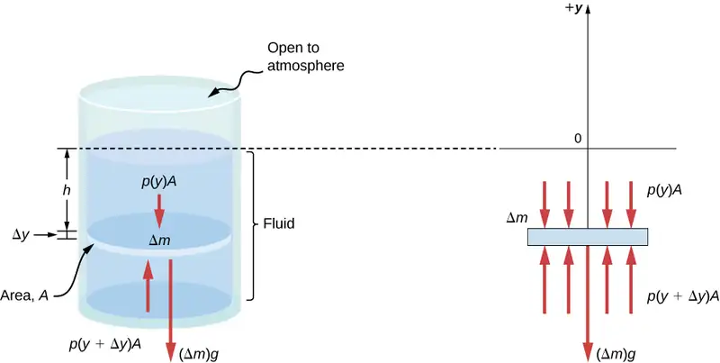
Since the element of fluid between y and \(y+\Delta y\) is not accelerating, the forces are balanced. Using a Cartesian y-axis oriented up, we find the following equation for the y-component:
Note that if the element had a non-zero y-component of acceleration, the right-hand side would not be zero but would instead be the mass times the y-acceleration. The mass of the element can be written in terms of the density of the fluid and the volume of the elements:
Putting this expression for \(\Delta m\) into Equation 14.6 and then dividing both sides by \(A\Delta y\), we find
Taking the limit of the infinitesimally thin element \(\Delta y\rightarrow 0\), we obtain the following differential equation, which gives the variation of pressure in a fluid:
equation callout
This equation tells us that the rate of change of pressure in a fluid is proportional to the density of the fluid. The solution of this equation depends upon whether the density ρ is constant or changes with depth; that is, the function ρ(y).
If the range of the depth being analyzed is not too great, we can assume the density to be constant. But if the range of depth is large enough for the density to vary appreciably, such as in the case of the atmosphere, there is significant change in density with depth. In that case, we cannot use the approximation of a constant density.
Pressure in a fluid with a constant density¶
Let’s use Equation 14.9 to work out a formula for the pressure at a depth h from the surface in a tank of a liquid such as water, where the density of the liquid can be taken to be constant.
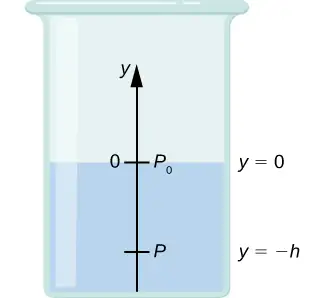
We need to integrate Equation 14.9 from \(y=0,\) where the pressure is atmospheric pressure \((p_{0}),\) to \(y=-h,\) the y-coordinate of the depth:
Hence, pressure at a depth of fluid on the surface of Earth is equal to the atmospheric pressure plus ρgh if the density of the fluid is constant over the height, as we found previously.
Note that the pressure in a fluid depends only on the depth from the surface and not on the shape of the container. Thus, in a container where a fluid can freely move in various parts, the liquid stays at the same level in every part, regardless of the shape, as shown in Figure 14.9.
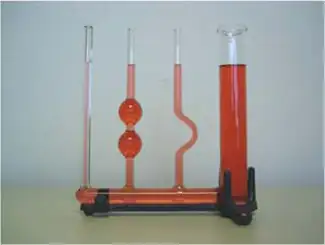
Variation of atmospheric pressure with height¶
The change in atmospheric pressure with height is of particular interest. Assuming the temperature of air to be constant, and that the ideal gas law of thermodynamics describes the atmosphere to a good approximation, we can find the variation of atmospheric pressure with height, when the temperature is constant. (We discuss the ideal gas law in a later chapter, but we assume you have some familiarity with it from high school and chemistry.) Let p(y) be the atmospheric pressure at height y. The density \(\rho\) at y, the temperature T in the Kelvin scale (K), and the mass m of a molecule of air are related to the absolute pressure by the ideal gas law, in the form
where \(k_{\text{B}}\) is Boltzmann’s constant, which has a value of \(1.38\:\times\:{10}^{-23}\text{J/K}\).
You may have encountered the ideal gas law in the form \(pV=nRT\), where n is the number of moles and R is the gas constant. Here, the same law has been written in a different form, using the density \(\rho\) instead of volume V. Therefore, if pressure p changes with height, so does the density \(\rho.\) Using density from the ideal gas law, the rate of variation of pressure with height is given as
where constant quantities have been collected inside the parentheses. Replacing these constants with a single symbol \(\alpha,\) the equation looks much simpler:
This gives the solution
Thus, atmospheric pressure drops exponentially with height, since the y-axis is pointed up from the ground and y has positive values in the atmosphere above sea level. The pressure drops by a factor of \(\frac{1}{e}\) when the height is \(\frac{1}{\alpha},\) which gives us a physical interpretation for \(\alpha\): The constant \(\frac{1}{\alpha}\) is a length scale that characterizes how pressure varies with height and is often referred to as the pressure scale height.
We can obtain an approximate value of \(\alpha\) by using the mass of a nitrogen molecule as a proxy for an air molecule. At temperature \(\text{27 °C,}\) or 300 K, we find
Therefore, for every 8800 meters, the air pressure drops by a factor 1/e, or approximately one-third of its value. This gives us only a rough estimate of the actual situation, since we have assumed both a constant temperature and a constant g over such great distances from Earth, neither of which is correct in reality.
Direction of pressure in a fluid¶
Fluid pressure has no direction, being a scalar quantity, whereas the forces due to pressure have well-defined directions: They are always exerted perpendicular to any surface. The reason is that fluids cannot withstand or exert shearing forces. Thus, in a static fluid enclosed in a tank, the force exerted on the walls of the tank is exerted perpendicular to the inside surface. Likewise, pressure is exerted perpendicular to the surfaces of any object within the fluid. Figure 14.10 illustrates the pressure exerted by air on the walls of a tire and by water on the body of a swimmer.
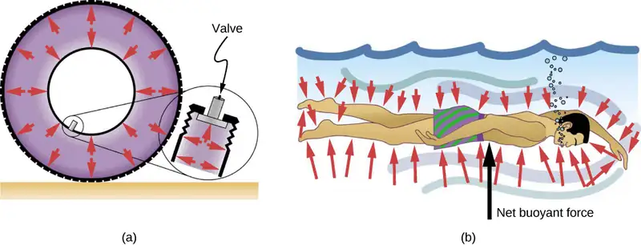
14.2 Measuring Pressure¶
Learning Objectives
By the end of this section, you will be able to:
- Define gauge pressure and absolute pressure
- Explain various methods for measuring pressure
- Understand the working of open-tube barometers
- Describe in detail how manometers and barometers operate
In the preceding section, we derived a formula for calculating the variation in pressure for a fluid in hydrostatic equilibrium. As it turns out, this is a very useful calculation. Measurements of pressure are important in daily life as well as in science and engineering applications. In this section, we discuss different ways that pressure can be reported and measured.
Gauge Pressure vs. Absolute Pressure¶
Suppose the pressure gauge on a full scuba tank reads 3000 psi, which is approximately 207 atmospheres. When the valve is opened, air begins to escape because the pressure inside the tank is greater than the atmospheric pressure outside the tank. Air continues to escape from the tank until the pressure inside the tank equals the pressure of the atmosphere outside the tank. At this point, the pressure gauge on the tank reads zero, even though the pressure inside the tank is actually 1 atmosphere—the same as the air pressure outside the tank.
Most pressure gauges, like the one on the scuba tank, are calibrated to read zero at atmospheric pressure. Pressure readings from such gauges are called gauge pressure, which is the pressure relative to the atmospheric pressure. When the pressure inside the tank is greater than atmospheric pressure, the gauge reports a positive value.
Some gauges are designed to measure negative pressure. For example, many physics experiments must take place in a vacuum chamber, a rigid chamber from which some of the air is pumped out. The pressure inside the vacuum chamber is less than atmospheric pressure, so the pressure gauge on the chamber reads a negative value.
Unlike gauge pressure, absolute pressure accounts for atmospheric pressure, which in effect adds to the pressure in any fluid not enclosed in a rigid container.
Absolute Pressure
The absolute pressure, or total pressure, is the sum of gauge pressure and atmospheric pressure:
where \(p_{\text{abs}}\) is absolute pressure, \(p_{\text{g}}\) is gauge pressure, and \(p_{\text{atm}}\) is atmospheric pressure.
For example, if a tire gauge reads 34 psi, then the absolute pressure is 34 psi plus 14.7 psi (\(p_{\text{atm}}\) in psi), or 48.7 psi (equivalent to 336 kPa).
In most cases, the absolute pressure in fluids cannot be negative. Fluids push rather than pull, so the smallest absolute pressure in a fluid is zero (a negative absolute pressure is a pull). Thus, the smallest possible gauge pressure is \(p_{\text{g}}=-p_{\text{atm}}\) (which makes \(p_{\text{abs}}\) zero). There is no theoretical limit to how large a gauge pressure can be.
Measuring Pressure¶
A host of devices are used for measuring pressure, ranging from tire gauges to blood pressure monitors. Many other types of pressure gauges are commonly used to test the pressure of fluids, such as mechanical pressure gauges. We will explore some of these in this section.
Any property that changes with pressure in a known way can be used to construct a pressure gauge. Some of the most common types include strain gauges, which use the change in the shape of a material with pressure; capacitance pressure gauges, which use the change in electric capacitance due to shape change with pressure; piezoelectric pressure gauges, which generate a voltage difference across a piezoelectric material under a pressure difference between the two sides; and ion gauges, which measure pressure by ionizing molecules in highly evacuated chambers. Different pressure gauges are useful in different pressure ranges and under different physical situations. Some examples are shown in Figure 14.11.
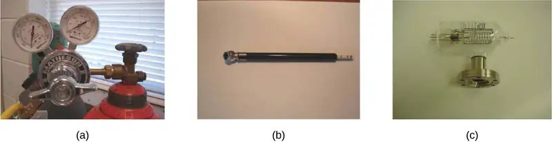
Manometers¶
One of the most important classes of pressure gauges applies the property that pressure due to the weight of a fluid of constant density is given by \(p=h\rho g\). The U-shaped tube shown in Figure 14.12 is an example of a manometer; in part (a), both sides of the tube are open to the atmosphere, allowing atmospheric pressure to push down on each side equally so that its effects cancel.
A manometer with only one side open to the atmosphere is an ideal device for measuring gauge pressures. The gauge pressure is \(p_{\text{g}}=h\rho g\) and is found by measuring h. For example, suppose one side of the U-tube is connected to some source of pressure \(p_{\text{abs}},\) such as the balloon in part (b) of the figure or the vacuum-packed peanut jar shown in part (c). Pressure is transmitted undiminished to the manometer, and the fluid levels are no longer equal. In part (b), \(p_{\text{abs}}\) is greater than atmospheric pressure, whereas in part (c), \(p_{\text{abs}}\) is less than atmospheric pressure. In both cases, \(p_{\text{abs}}\) differs from atmospheric pressure by an amount \(h\rho g,\) where \(\rho\) is the density of the fluid in the manometer. In part (b), \(p_{\text{abs}}\) can support a column of fluid of height h, so it must exert a pressure \(h\rho g\) greater than atmospheric pressure (the gauge pressure \(p_{\text{g}}\) is positive). In part (c), atmospheric pressure can support a column of fluid of height h, so \(p_{\text{abs}}\) is less than atmospheric pressure by an amount \(h\rho g\) (the gauge pressure \(p_{\text{g}}\) is negative).
![Figure A is a schematic drawing of an open-tube manometer that has both sides open to the atmosphere. Water level is at an identical height on both sides. Figure B is a schematic drawing of an open-tube manometer that has one side open to the atmosphere and the second side connected to the air balloon. Water level is higher at the side opened to the atmosphere. Figure C is a schematic drawing of an open-tube manometer that has one side open to the atmosphere and the second side connected to a can of vacuum packed peanuts. Water level is lower at the side opened to the atmosphere.](img/cnx-uphysics-figure-14-02-manometers.webp)
Barometers¶
Manometers typically use a U-shaped tube of a fluid (often mercury) to measure pressure. A barometer (see Figure 14.13) is a device that typically uses a single column of mercury to measure atmospheric pressure. The barometer, invented by the Italian mathematician and physicist Evangelista Torricelli (1608–1647) in 1643, is constructed from a glass tube closed at one end and filled with mercury. The tube is then inverted and placed in a pool of mercury. This device measures atmospheric pressure, rather than gauge pressure, because there is a nearly pure vacuum above the mercury in the tube. The height of the mercury is such that \(h\rho g=p_{\text{atm}}\). When atmospheric pressure varies, the mercury rises or falls.
Weather forecasters closely monitor changes in atmospheric pressure (often reported as barometric pressure), as rising mercury typically signals improving weather and falling mercury indicates deteriorating weather. The barometer can also be used as an altimeter, since average atmospheric pressure varies with altitude. Mercury barometers and manometers are so common that units of mm Hg are often quoted for atmospheric pressure and blood pressures.
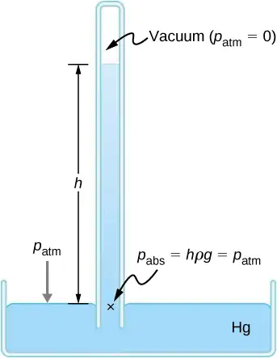
Example 14.2 Fluid Heights in an Open U-Tube
A U-tube with both ends open is filled with a liquid of density \(\rho_{1}\) to a height h on both sides (Figure 14.14). A liquid of density \(\rho_{2} \lt \rho_{1}\) is poured into one side and Liquid 2 settles on top of Liquid 1. The heights on the two sides are different. The height to the top of Liquid 2 from the interface is \(h_{2}\) and the height to the top of Liquid 1 from the level of the interface is \(h_{1}\). Derive a formula for the height difference.
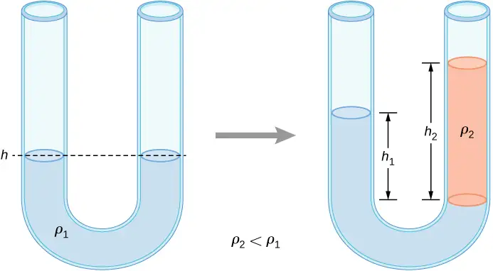
Strategy
The pressure at points at the same height on the two sides of a U-tube must be the same as long as the two points are in the same liquid. Therefore, we consider two points at the same level in the two arms of the tube: One point is the interface on the side of the Liquid 2 and the other is a point in the arm with Liquid 1 that is at the same level as the interface in the other arm. The pressure at each point is due to atmospheric pressure plus the weight of the liquid above it.
Solution
Since the two points are in Liquid 1 and are at the same height, the pressure at the two points must be the same. Therefore, we have
Hence,
This means that the difference in heights on the two sides of the U-tube is
The result makes sense if we set \(\rho_{2}=\rho_{1},\) which gives \(h_{2}=h_{1}.\) If the two sides have the same density, they have the same height.
Check Your Understanding
Mercury is a hazardous substance. Why do you suppose mercury is typically used in barometers instead of a safer fluid such as water?
Answer
The density of mercury is 13.6 times greater than the density of water. It takes approximately 76 cm (29.9 in.) of mercury to measure the pressure of the atmosphere, whereas it would take approximately 10 m (34 ft.) of water.
Units of pressure¶
As stated earlier, the SI unit for pressure is the pascal (Pa), where
In addition to the pascal, many other units for pressure are in common use (Table 14.3). In meteorology, atmospheric pressure is often described in the unit of millibars (mbar), where
The millibar is a convenient unit for meteorologists because the average atmospheric pressure at sea level on Earth is \(1.013\:\times\:{10}^{5}\:\text{Pa}=1013\:\text{mbar}=1\:\text{atm}\). Using the equations derived when considering pressure at a depth in a fluid, pressure can also be measured as millimeters or inches of mercury. The pressure at the bottom of a 760-mm column of mercury at \(0\:\text{°C}\) in a container where the top part is evacuated is equal to the atmospheric pressure. Thus, 760 mm Hg is also used in place of 1 atmosphere of pressure. In vacuum physics labs, scientists often use another unit called the torr, named after Torricelli, who, as we have just seen, invented the mercury manometer for measuring pressure. One torr is equal to a pressure of 1 mm Hg.
Table 14.3 Summary of the Units of Pressure
| Unit | Definition |
|---|---|
| SI unit: the Pascal | \(1\:\text{Pa}=1\:\text{N/m}^{2}\) |
| English unit: pounds per square inch (\(\text{lb/in.}^{2}\) or psi) | \(1\:\text{psi}=6.895\:\times\:{10}^{3}\:\text{Pa}\) |
| Other units of pressure | \(\begin{array}{cc} 1\:\text{atm} & =760\:\text{mmHg} \\ & =1.013\:\times\:{10}^{5}\:\text{Pa} \\ & =14.7\:\text{psi} \\ & =29.9\:\text{inches of Hg} \\ & =1013\:\text{mbar} \end{array}\) |
| \(1\:\text{bar}={10}^{5}\:\text{Pa}\) | |
| \(1\:\text{torr}=1\:\text{mm Hg}=133.3\:\text{Pa}\) |
14.3 Pascal's Principle and Hydraulics¶
Learning Objectives
By the end of this section, you will be able to:
- State Pascal’s principle
- Describe applications of Pascal’s principle
- Derive relationships between forces in a hydraulic system
In 1653, the French philosopher and scientist Blaise Pascal published his Treatise on the Equilibrium of Liquids, in which he discussed principles of static fluids. A static fluid is a fluid that is not in motion. When a fluid is not flowing, we say that the fluid is in static equilibrium. If the fluid is water, we say it is in hydrostatic equilibrium. For a fluid in static equilibrium, the net force on any part of the fluid must be zero; otherwise the fluid will start to flow.
Pascal’s observations—since proven experimentally—provide the foundation for hydraulics, one of the most important developments in modern mechanical technology. Pascal observed that a change in pressure applied to an enclosed fluid is transmitted undiminished throughout the fluid and to the walls of its container. Because of this, we often know more about pressure than other physical quantities in fluids. Moreover, Pascal’s principle implies that the total pressure in a fluid is the sum of the pressures from different sources. A good example is the fluid at a depth depends on the depth of the fluid and the pressure of the atmosphere.
Pascal’s Principle¶
Pascal’s principle (also known as Pascal’s law) states that when a change in pressure is applied to an enclosed fluid, it is transmitted undiminished to all portions of the fluid and to the walls of its container. In an enclosed fluid, since atoms of the fluid are free to move about, they transmit pressure to all parts of the fluid and to the walls of the container. Any change in pressure is transmitted undiminished.
Note that this principle does not say that the pressure is the same at all points of a fluid—which is not true, since the pressure in a fluid near Earth varies with height. Rather, this principle applies to the change in pressure. Suppose you place some water in a cylindrical container of height H and cross-sectional area A that has a movable piston of mass m (Figure 14.15). Adding weight Mg at the top of the piston increases the pressure at the top by Mg/A, since the additional weight also acts over area A of the lid:
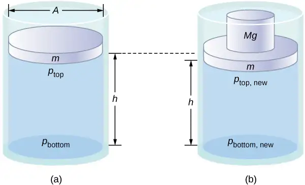
According to Pascal’s principle, the pressure at all points in the water changes by the same amount, Mg/A. Thus, the pressure at the bottom also increases by Mg/A. The pressure at the bottom of the container is equal to the sum of the atmospheric pressure, the pressure due to the fluid, and the pressure supplied by the mass. The change in pressure at the bottom of the container due to the mass is
Since the pressure changes are the same everywhere in the fluid, we no longer need subscripts to designate the pressure change for top or bottom:
Media
Pascal’s Barrel is a great demonstration of Pascal’s principle. Watch a simulation of Pascal’s 1646 experiment, in which he demonstrated the effects of changing pressure in a fluid.
Applications of Pascal’s Principle and Hydraulic Systems¶
Hydraulic systems are used to operate automotive brakes, hydraulic jacks, and numerous other mechanical systems (Figure 14.16).
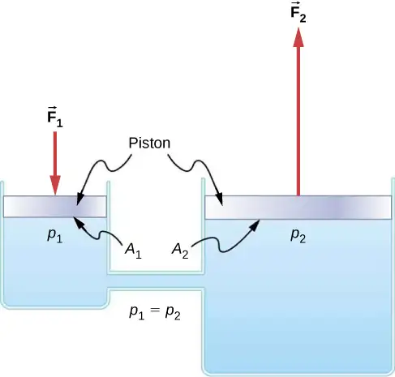
We can derive a relationship between the forces in this simple hydraulic system by applying Pascal’s principle. Note first that the two pistons in the system are at the same height, so there is no difference in pressure due to a difference in depth. The pressure due to \(F_{1}\) acting on area \(A_{1}\) is simply
According to Pascal’s principle, this pressure is transmitted undiminished throughout the fluid and to all walls of the container. Thus, a pressure \(p_{2}\) is felt at the other piston that is equal to \(p_{1}\). That is, \(p_{1}=p_{2}.\) However, since\(p_{2}=F_{2}\text{/}A_{2},\) we see that
equation callout
This equation relates the ratios of force to area in any hydraulic system, provided that the pistons are at the same vertical height and that friction in the system is negligible.
Hydraulic systems can increase or decrease the force applied to them. To make the force larger, the pressure is applied to a larger area. For example, if a 100-N force is applied to the left cylinder in Figure 14.16 and the right cylinder has an area five times greater, then the output force is 500 N. Hydraulic systems are analogous to simple levers, but they have the advantage that pressure can be sent through tortuously curved lines to several places at once.
The hydraulic jack is such a hydraulic system. A hydraulic jack is used to lift heavy loads, such as the ones used by auto mechanics to raise an automobile. It consists of an incompressible fluid in a U-tube fitted with a movable piston on each side. One side of the U-tube is narrower than the other. A small force applied over a small area can balance a much larger force on the other side over a larger area (Figure 14.17).
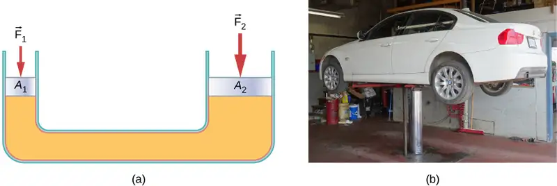
From Pascal’s principle, it can be shown that the force needed to lift the car is less than the weight of the car:
where \(F_{1}\) is the force applied to lift the car, \(A_{1}\) is the cross-sectional area of the smaller piston, \(A_{2}\) is the cross sectional area of the larger piston, and \(F_{2}\) is the weight of the car.
Example 14.3 Calculating Force on Wheel Cylinders: Pascal Puts on the Brakes
Consider the automobile hydraulic system shown in Figure 14.18. Suppose a force of 100 N is applied to the brake pedal, which acts on the pedal cylinder (acting as a “master” cylinder) through a lever. A force of 500 N is exerted on the pedal cylinder. Pressure created in the pedal cylinder is transmitted to the four wheel cylinders. The pedal cylinder has a diameter of 0.500 cm and each wheel cylinder has a diameter of 2.50 cm. Calculate the magnitude of the force \(F_{2}\) created at each of the wheel cylinders.
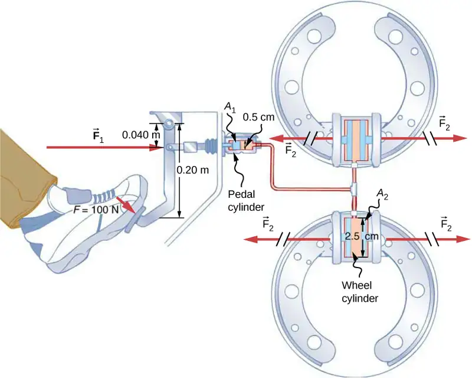
Strategy
We are given the force \(F_{1}\) applied to the pedal cylinder. The cross-sectional areas \(A_{1}\) and \(A_{2}\) can be calculated from their given diameters. Then we can use the following relationship to find the force \(F_{2}\):
Manipulate this algebraically to get \(F_{2}\) on one side and substitute known values.
Solution
Pascal’s principle applied to hydraulic systems is given by \(\frac{F_{1}}{A_{1}}=\frac{F_{2}}{A_{2}}:\)
Significance
This value is the force exerted by each of the four wheel cylinders. Note that we can add as many wheel cylinders as we wish. If each has a 2.50-cm diameter, each will exert \(1.25\:\times\:{10}^{4}\:\text{N}.\) A simple hydraulic system, as an example of a simple machine, can increase force but cannot do more work than is done on it. Work is force times distance moved, and the wheel cylinder moves through a smaller distance than the pedal cylinder. Furthermore, the more wheels added, the smaller the distance each one moves. Many hydraulic systems—such as power brakes and those in bulldozers—have a motorized pump that actually does most of the work in the system.
Check Your Understanding
Would a hydraulic press still operate properly if a gas is used instead of a liquid?
Answer
Yes, it would still work, but since a gas is compressible, it would not operate as efficiently. When the force is applied, the gas would first compress and warm. Hence, the air in the brake lines must be bled out in order for the brakes to work properly.
14.4 Archimedes’ Principle and Buoyancy¶
Learning Objectives
By the end of this section, you will be able to:
- Define buoyant force
- State Archimedes’ principle
- Describe the relationship between density and Archimedes’ principle
When placed in a fluid, some objects float due to a buoyant force. Where does this buoyant force come from? Why is it that some things float and others do not? Do objects that sink get any support at all from the fluid? Is your body buoyed by the atmosphere, or are only helium balloons affected (Figure 14.19)?
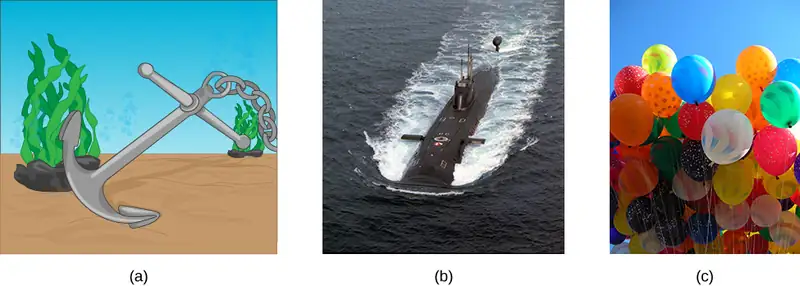
Answers to all these questions, and many others, are based on the fact that pressure increases with depth in a fluid. This means that the upward force on the bottom of an object in a fluid is greater than the downward force on top of the object. There is an upward force, or buoyant force, on any object in any fluid (Figure 14.20). If the buoyant force is greater than the object’s weight, the net force on the object is upward. If we release such an object, it will rise in the fluid. If the buoyant force is less than the object’s weight, the object sinks when released. If the buoyant force equals the object’s weight, the object can remain suspended at its present depth, either immersed in the fluid (as for a neutrally buoyant diver) or partly above the surface (as with a floating object.) If the buoyant force equals the object’s weight, the object can remain suspended at its present depth. The buoyant force is always present, whether the object floats, sinks, or is suspended in a fluid.
Buoyant Force
The buoyant force is the upward force on any object in any fluid.
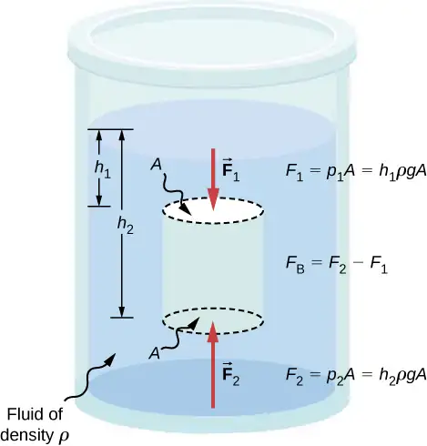
Archimedes’ Principle¶
Just how large a force is buoyant force? To answer this question, think about what happens when a submerged object is removed from a fluid, as in Figure 14.21. If the object were not in the fluid, the space the object occupied would be filled by fluid having a weight \(w_{\text{fl}}.\) This weight is supported by the surrounding fluid, so the buoyant force must equal \(w_{\text{fl}},\) the weight of the fluid displaced by the object.
Archimedes’ Principle
The buoyant force on an object equals the weight of the fluid it displaces. In equation form, Archimedes’ principle is
where \(F_{\text{B}}\) is the buoyant force and \(w_{\text{fl}}\) is the weight of the fluid displaced by the object.
This principle is named after the Greek mathematician and inventor Archimedes (ca. 287–212 BCE), who stated this principle long before concepts of force were well established.
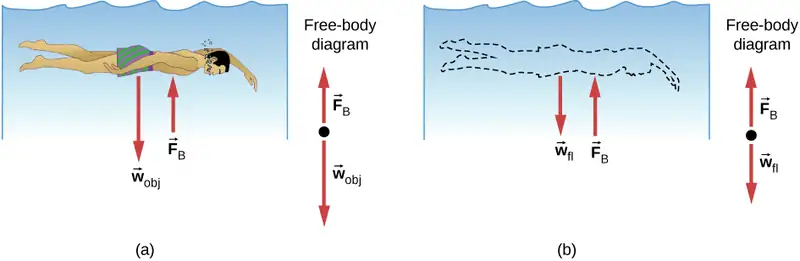
Archimedes’ principle refers to the force of buoyancy that results when a body is submerged in a fluid, whether partially or wholly. The force that provides the pressure of a fluid acts on a body perpendicular to the surface of the body. In other words, the force due to the pressure at the bottom is pointed up, while at the top, the force due to the pressure is pointed down; the forces due to the pressures at the sides are pointing into the body.
Since the bottom of the body is at a greater depth than the top of the body, the pressure at the lower part of the body is higher than the pressure at the upper part, as shown in Figure 14.20. Therefore a net upward force acts on the body. This upward force is the force of buoyancy, or simply buoyancy.
Media
The exclamation “Eureka” (meaning “I found it”) has often been credited to Archimedes as he made the discovery that would lead to Archimedes’ principle. Some say it all started in a bathtub. To hear this story, watch this video or explore Scientific American to learn more.
Density and Archimedes’ Principle¶
If you drop a lump of clay in water, it will sink. But if you mold the same lump of clay into the shape of a boat, it will float. Because of its shape, the clay boat displaces more water than the lump and experiences a greater buoyant force, even though its mass is the same. The same is true of steel ships.
The average density of an object is what ultimately determines whether it floats. If an object’s average density is less than that of the surrounding fluid, it will float. The reason is that the fluid, having a higher density, contains more mass and hence more weight in the same volume. The buoyant force, which equals the weight of the fluid displaced, is thus greater than the weight of the object. Likewise, an object denser than the fluid will sink.
The extent to which a floating object is submerged depends on how the object’s density compares to the density of the fluid. In Figure 14.22, for example, the unloaded ship has a lower density and less of it is submerged compared with the same ship when loaded. We can derive a quantitative expression for the fraction submerged by considering density. The fraction submerged is the ratio of the volume submerged to the volume of the object, or
The volume submerged equals the volume of fluid displaced, which we call \(V_{fl}\). Now we can obtain the relationship between the densities by substituting \(\rho=\frac{m}{V}\) into the expression. This gives
where \(\rho_{\text{obj}}\) is the average density of the object and \(\rho_{\text{fl}}\) is the density of the fluid. Since the object floats, its mass and that of the displaced fluid are equal, so they cancel from the equation, leaving
We can use this relationship to measure densities.
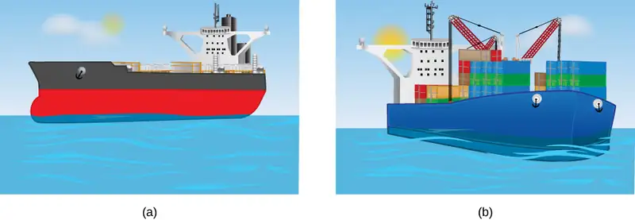
Example 14.4 Calculating Average Density
Suppose a 60.0-kg woman floats in fresh water with 97.0% of her volume submerged when her lungs are full of air. What is her average density?
Strategy
We can find the woman’s density by solving the equation
for the density of the object. This yields
We know both the fraction submerged and the density of water, so we can calculate the woman’s density.
Solution
Entering the known values into the expression for her density, we obtain
Significance
The woman’s density is less than the fluid density. We expect this because she floats.
Numerous lower-density objects or substances float in higher-density fluids: oil on water, a hot-air balloon in the atmosphere, a bit of cork in wine, an iceberg in salt water, and hot wax in a “lava lamp,” to name a few. A less obvious example is mountain ranges floating on the higher-density crust and mantle beneath them. Even seemingly solid Earth has fluid characteristics.
Measuring Density¶
One of the most common techniques for determining density is shown in Figure 14.23.
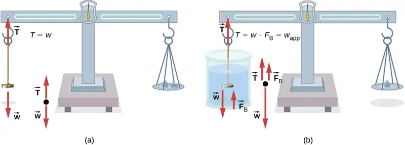
An object, here a coin, is weighed in air and then weighed again while submerged in a liquid. The density of the coin, an indication of its authenticity, can be calculated if the fluid density is known. We can use this same technique to determine the density of the fluid if the density of the coin is known.
All of these calculations are based on Archimedes’ principle, which states that the buoyant force on the object equals the weight of the fluid displaced. This, in turn, means that the object appears to weigh less when submerged; we call this measurement the object’s apparent weight. The object suffers an apparent weight loss equal to the weight of the fluid displaced. Alternatively, on balances that measure mass, the object suffers an apparent mass loss equal to the mass of fluid displaced. That is, apparent weight loss equals weight of fluid displaced, or apparent mass loss equals mass of fluid displaced.
14.5 Fluid Dynamics¶
Learning Objectives
By the end of this section, you will be able to:
- Describe the characteristics of flow
- Calculate flow rate
- Describe the relationship between flow rate and velocity
- Explain the consequences of the equation of continuity to the conservation of mass
The first part of this chapter dealt with fluid statics, the study of fluids at rest. The rest of this chapter deals with fluid dynamics, the study of fluids in motion. Even the most basic forms of fluid motion can be quite complex. For this reason, we limit our investigation to ideal fluids in many of the examples. An ideal fluid is a fluid with negligible viscosity. Viscosity is a measure of the internal friction in a fluid; we examine it in more detail in Viscosity and Turbulence. In a few examples, we examine an incompressible fluid—one for which an extremely large force is required to change the volume—since the density in an incompressible fluid is constant throughout.
Characteristics of Flow¶
Velocity vectors are often used to illustrate fluid motion in applications like meteorology. For example, wind—the fluid motion of air in the atmosphere—can be represented by vectors indicating the speed and direction of the wind at any given point on a map. Figure 14.24 shows velocity vectors describing the winds during Hurricane Arthur in 2014.
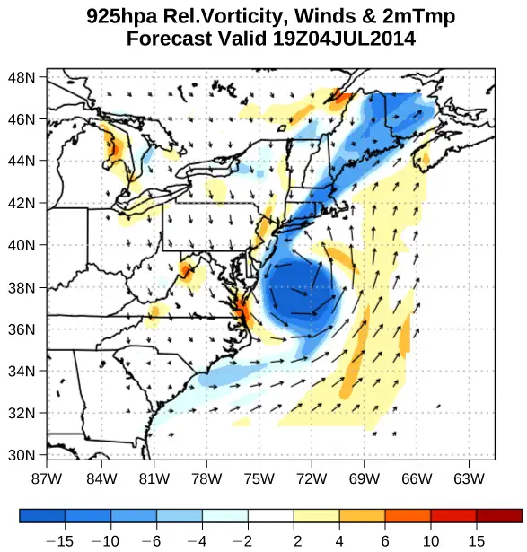
Another method for representing fluid motion is a streamline. A streamline represents the path of a small volume of fluid as it flows. The velocity is always tangential to the streamline. The diagrams in Figure 14.25 use streamlines to illustrate two examples of fluids moving through a pipe. The first fluid exhibits a laminar flow (sometimes described as a steady flow), represented by smooth, parallel streamlines. Note that in the example shown in part (a), the velocity of the fluid is greatest in the center and decreases near the walls of the pipe due to the viscosity of the fluid and friction between the pipe walls and the fluid. This is a special case of laminar flow, where the friction between the pipe and the fluid is high, known as no slip boundary conditions. The second diagram represents turbulent flow, in which streamlines are irregular and change over time. In turbulent flow, the paths of the fluid flow are irregular as different parts of the fluid mix together or form small circular regions that resemble whirlpools. This can occur when the speed of the fluid reaches a certain critical speed.
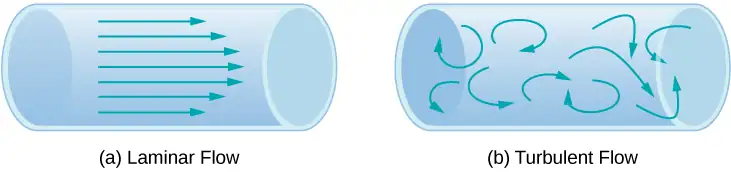
Flow Rate and its Relation to Velocity¶
The volume of fluid passing by a given location through an area during a period of time is called flow rate Q, or more precisely, volume flow rate. In symbols, this is written as
equation callout
where V is the volume and t is the elapsed time. In Figure 14.26, the volume of the cylinder is Ax, so the flow rate is
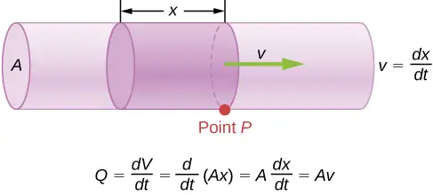
The SI unit for flow rate is \(\text{m}^{3}\text{/s,}\) but several other units for Q are in common use, such as liters per minute (L/min). Note that a liter (L) is 1/1000 of a cubic meter or 1000 cubic centimeters \(({10}^{-3}{\:\text{m}}^{3}\text{or}\:{10}^{3}\:\text{cm}^{3}).\)
Flow rate and velocity are related, but quite different, physical quantities. To make the distinction clear, consider the flow rate of a river. The greater the velocity of the water, the greater the flow rate of the river. But flow rate also depends on the size and shape of the river. A rapid mountain stream carries far less water than the Amazon River in Brazil, for example. Figure 14.26 illustrates the volume flow rate. The volume flow rate is \(Q=\frac{dV}{dt}=Av,\) where \(A\) is the cross-sectional area of the pipe and v is the magnitude of the velocity.
The precise relationship between flow rate Q and average speed v is
where A is the cross-sectional area and \(v\) is the average speed. The relationship tells us that flow rate is directly proportional to both the average speed of the fluid and the cross-sectional area of a river, pipe, or other conduit. The larger the conduit, the greater its cross-sectional area. Figure 14.26 illustrates how this relationship is obtained. The shaded cylinder has a volume \(V=Ad\), which flows past the point P in a time t. Dividing both sides of this relationship by t gives
We note that \(Q=V\text{/}t\) and the average speed is \(v\ =d/t\). Thus the equation becomes \(Q=Av\).
Figure 14.27 shows an incompressible fluid flowing along a pipe of decreasing radius. Because the fluid is incompressible, the same amount of fluid must flow past any point in the tube in a given time to ensure continuity of flow. The flow is continuous because they are no sources or sinks that add or remove mass, so the mass flowing into the pipe must be equal the mass flowing out of the pipe. In this case, because the cross-sectional area of the pipe decreases, the velocity must necessarily increase. This logic can be extended to say that the flow rate must be the same at all points along the pipe. In particular, for arbitrary points 1 and 2,
equation callout
This is called the equation of continuity and is valid for any incompressible fluid (with constant density). The consequences of the equation of continuity can be observed when water flows from a hose into a narrow spray nozzle: It emerges with a large speed—that is the purpose of the nozzle. Conversely, when a river empties into one end of a reservoir, the water slows considerably, perhaps picking up speed again when it leaves the other end of the reservoir. In other words, speed increases when cross-sectional area decreases, and speed decreases when cross-sectional area increases.
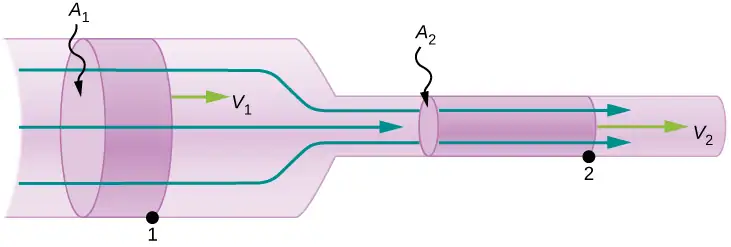
Since liquids are essentially incompressible, the equation of continuity is valid for all liquids. However, gases are compressible, so the equation must be applied with caution to gases if they are subjected to compression or expansion.
Example 14.5 Calculating Fluid Speed through a Nozzle
A nozzle with a diameter of 0.500 cm is attached to a garden hose with a radius of 0.900 cm. The flow rate through hose and nozzle is 0.500 L/s. Calculate the speed of the water (a) in the hose and (b) in the nozzle.
Strategy
We can use the relationship between flow rate and speed to find both speeds. We use the subscript 1 for the hose and 2 for the nozzle.
Solution
a. We solve the flow rate equation for speed and use \(\pi r_{1}{}^{2}\) for the cross-sectional area of the hose, obtaining
Substituting values and using appropriate unit conversions yields
b. We could repeat this calculation to find the speed in the nozzle \(v_{2}\), but we use the equation of continuity to give a somewhat different insight. The equation states
Solving for \(v_{2}\) and substituting \(\pi r^{2}\) for the cross-sectional area yields
Substituting known values,
Significance
A speed of 1.96 m/s is about right for water emerging from a hose with no nozzle. The nozzle produces a considerably faster stream merely by constricting the flow to a narrower tube.
The solution to the last part of the example shows that speed is inversely proportional to the square of the radius of the tube, making for large effects when radius varies. We can blow out a candle at quite a distance, for example, by pursing our lips, whereas blowing on a candle with our mouth wide open is quite ineffective.
Mass Conservation¶
The rate of flow of a fluid can also be described by the mass flow rate or mass rate of flow. This is the rate at which a mass of the fluid moves past a point. Refer once again to Figure 14.26, but this time consider the mass in the shaded volume. The mass can be determined from the density and the volume:
The mass flow rate is then
where \(\rho\) is the density, A is the cross-sectional area, and v is the magnitude of the velocity. The mass flow rate is an important quantity in fluid dynamics and can be used to solve many problems. Consider Figure 14.27. The pipe in the figure starts at the inlet with a cross sectional area of \(A_{1}\) and constricts to an outlet with a smaller cross sectional area of \(A_{2}\). The mass of fluid entering the pipe has to be equal to the mass of fluid leaving the pipe. For this reason the velocity at the outlet \((v_{2})\) is greater than the velocity of the inlet \((v_{1})\). Using the fact that the mass of fluid entering the pipe must be equal to the mass of fluid exiting the pipe, we can find a relationship between the velocity and the cross-sectional area by taking the rate of change of the mass in and the mass out:
equation callout
Equation 14.15 is also known as the continuity equation in general form. If the density of the fluid remains constant through the constriction—that is, the fluid is incompressible—then the density cancels from the continuity equation,
The equation reduces to show that the volume flow rate into the pipe equals the volume flow rate out of the pipe.
14.6 Bernoulli’s Equation¶
Learning Objectives
By the end of this section, you will be able to:
- Explain the terms in Bernoulli’s equation
- Explain how Bernoulli’s equation is related to the conservation of energy
- Describe how to derive Bernoulli’s principle from Bernoulli’s equation
- Perform calculations using Bernoulli’s principle
- Describe some applications of Bernoulli’s principle
As we showed in Figure 14.27, when a fluid flows into a narrower channel, its speed increases. That means its kinetic energy also increases. The increased kinetic energy comes from the net work done on the fluid to push it into the channel. Also, if the fluid changes vertical position, work is done on the fluid by the gravitational force.
A pressure difference occurs when the channel narrows. This pressure difference results in a net force on the fluid because the pressure times the area equals the force, and this net force does work. Recall the work-energy theorem,
The net work done increases the fluid’s kinetic energy. As a result, the pressure drops in a rapidly moving fluid whether or not the fluid is confined to a tube.
There are many common examples of pressure dropping in rapidly moving fluids. For instance, shower curtains have a disagreeable habit of bulging into the shower stall when the shower is on. The reason is that the high-velocity stream of water and air creates a region of lower pressure inside the shower, whereas the pressure on the other side remains at the standard atmospheric pressure. This pressure difference results in a net force, pushing the curtain inward. Similarly, when a car passes a truck on the highway, the two vehicles seem to pull toward each other. The reason is the same: The high velocity of the air between the car and the truck creates a region of lower pressure between the vehicles, and they are pushed together by greater pressure on the outside (Figure 14.29). This effect was observed as far back as the mid-1800s, when it was found that trains passing in opposite directions tipped precariously toward one another.
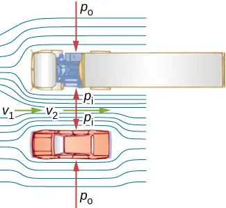
Energy Conservation and Bernoulli’s Equation¶
The application of the principle of conservation of energy to frictionless laminar flow leads to a very useful relation between pressure and flow speed in a fluid. This relation is called Bernoulli’s equation, named after Daniel Bernoulli (1700–1782), who published his studies on fluid motion in his book Hydrodynamica (1738).
Consider an incompressible fluid flowing through a pipe that has a varying diameter and height, as shown in Figure 14.30. Subscripts 1 and 2 in the figure denote two locations along the pipe and illustrate the relationships between the areas of the cross sections A, the speed of flow v, the height from ground h, and the pressure p at each point. We assume here that the density at the two points is the same—therefore, density is denoted by \(\rho\) without any subscripts—and since the fluid is incompressible, the shaded volumes must be equal.
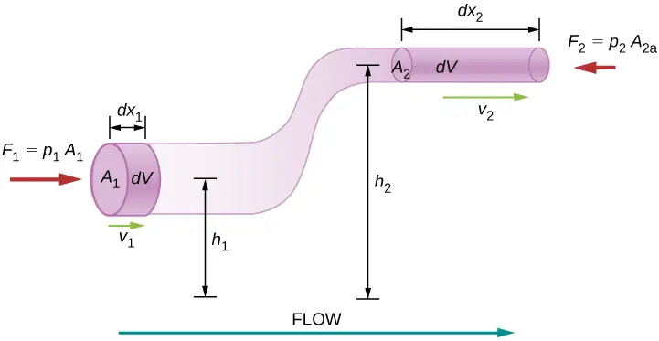
We also assume that there are no viscous forces in the fluid, so the energy of any part of the fluid will be conserved. To derive Bernoulli’s equation, we first calculate the work that was done on the fluid:
The work done was due to the conservative force of gravity and the change in the kinetic energy of the fluid. The change in the kinetic energy of the fluid is equal to
The change in potential energy is
The energy equation then becomes
Rearranging the equation gives Bernoulli’s equation:
This relation states that the mechanical energy of any part of the fluid changes as a result of the work done by the fluid external to that part, due to varying pressure along the way. Since the two points were chosen arbitrarily, we can write Bernoulli’s equation more generally as a conservation principle along the flow.
Bernoulli’s Equation
For an incompressible, frictionless fluid, the combination of pressure and the sum of kinetic and potential energy densities is constant not only over time, but also along a streamline:
A special note must be made here of the fact that in a dynamic situation, the pressures at the same height in different parts of the fluid may be different if they have different speeds of flow.
Analyzing Bernoulli’s Equation¶
According to Bernoulli’s equation, if we follow a small volume of fluid along its path, various quantities in the sum may change, but the total remains constant. Bernoulli’s equation is, in fact, just a convenient statement of conservation of energy for an incompressible fluid in the absence of friction.
The general form of Bernoulli’s equation has three terms in it, and it is broadly applicable. To understand it better, let us consider some specific situations that simplify and illustrate its use and meaning.
Bernoulli’s equation for static fluids¶
First consider the very simple situation where the fluid is static—that is, \(v_{1}=v_{2}=0.\) Bernoulli’s equation in that case is
We can further simplify the equation by setting \(h_{2}=0.\) (Any height can be chosen for a reference height of zero, as is often done for other situations involving gravitational force, making all other heights relative.) In this case, we get
This equation tells us that, in static fluids, pressure increases with depth. As we go from point 1 to point 2 in the fluid, the depth increases by \(h_{1}\), and consequently, \(p_{2}\) is greater than \(p_{1}\) by an amount \(\rho gh_{1}\). In the very simplest case, \(p_{1}\) is zero at the top of the fluid, and we get the familiar relationship \(p=\rho gh\). \((\text{Recall that}\:p=\rho gh\) and \(\Delta U_{\text{g}}=-mgh.)\) Thus, Bernoulli’s equation confirms the fact that the pressure change due to the weight of a fluid is \(\rho gh\). Although we introduce Bernoulli’s equation for fluid motion, it includes much of what we studied for static fluids earlier.
Bernoulli’s principle¶
Suppose a fluid is moving but its depth is constant—that is, \(h_{1}=h_{2}\). Under this condition, Bernoulli’s equation becomes
Situations in which fluid flows at a constant depth are so common that this equation is often also called Bernoulli’s principle, which is simply Bernoulli’s equation for fluids at constant depth. (Note again that this applies to a small volume of fluid as we follow it along its path.) Bernoulli’s principle reinforces the fact that pressure drops as speed increases in a moving fluid: If \(v_{2}\) is greater than \(v_{1}\) in the equation, then \(p_{2}\) must be less than \(p_{1}\) for the equality to hold.
Example 14.6 Calculating Pressure
In Example 14.5, we found that the speed of water in a hose increased from 1.96 m/s to 25.5 m/s going from the hose to the nozzle. Calculate the pressure in the hose, given that the absolute pressure in the nozzle is \(1.01\:\times\:{10}^{5}\:\text{N/m}^{2}\) (atmospheric, as it must be) and assuming level, frictionless flow.
Strategy
Level flow means constant depth, so Bernoulli’s principle applies. We use the subscript 1 for values in the hose and 2 for those in the nozzle. We are thus asked to find \(p_{1}\).
Solution
Solving Bernoulli’s principle for \(p_{1}\) yields
Substituting known values,
Significance
This absolute pressure in the hose is greater than in the nozzle, as expected, since v is greater in the nozzle. The pressure \(p_{2}\) in the nozzle must be atmospheric, because the water emerges into the atmosphere without other changes in conditions.
Applications of Bernoulli’s Principle¶
Many devices and situations occur in which fluid flows at a constant height and thus can be analyzed with Bernoulli’s principle.
Entrainment¶
People have long put the Bernoulli principle to work by using reduced pressure in high-velocity fluids to move things about. With a higher pressure on the outside, the high-velocity fluid forces other fluids into the stream. This process is called entrainment. Entrainment devices have been in use since ancient times as pumps to raise water to small heights, as is necessary for draining swamps, fields, or other low-lying areas. Some other devices that use the concept of entrainment are shown in Figure 14.31.
![Figure A is a drawing of a Bunsen burner: air and natural gas enter at the bottom and move upwards. Figure B is a drawing of an atomizer: a squeeze bulb creates a horizontally flowing jet of air that pulls moving drops of perfume upwards and out of the bottle. Figure C is a drawing of a common aspirator that has water moving from the top to the bottom and combines with the flow of air that enters from a side. Figure D is a drawing of a chimney in which a flow of hot air moves upwards combining with the cool air entering from the side.](img/cnx-uphysics-figure-14-06-entrainmnt.webp)
Velocity measurement¶
Figure 14.32 shows two devices that apply Bernoulli’s principle to measure fluid velocity. The manometer in part (a) is connected to two tubes that are small enough not to appreciably disturb the flow. The tube facing the oncoming fluid creates a dead spot having zero velocity (\(v_{1}=0\)) in front of it, while fluid passing the other tube has velocity \(v_{2}\). This means that Bernoulli’s principle as stated in
becomes
Thus pressure \(p_{2}\) over the second opening is reduced by \(\frac{1}{2}\rho v_{2}^{2}\), so the fluid in the manometer rises by h on the side connected to the second opening, where
(Recall that the symbol \(\propto\) means “proportional to.”) Solving for \(v_{2}\), we see that
Part (b) shows a version of this device that is in common use for measuring various fluid velocities; such devices are frequently used as air-speed indicators in aircraft.
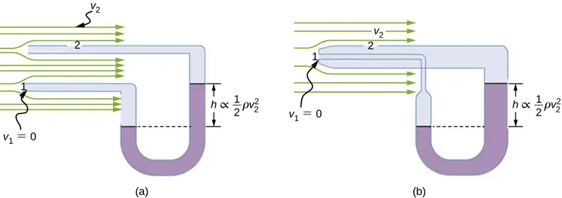
A fire hose¶
All preceding applications of Bernoulli’s equation involved simplifying conditions, such as constant height or constant pressure. The next example is a more general application of Bernoulli’s equation in which pressure, velocity, and height all change.
Example 14.7 Calculating Pressure: A Fire Hose Nozzle
Fire hoses used in major structural fires have an inside diameter of 6.40 cm (Figure 14.33). Suppose such a hose carries a flow of 40.0 L/s, starting at a gauge pressure of \(1.62\:\times\:{10}^{6}\text{N/m}^{2}\). The hose rises up 10.0 m along a ladder to a nozzle having an inside diameter of 3.00 cm. What is the pressure in the nozzle?
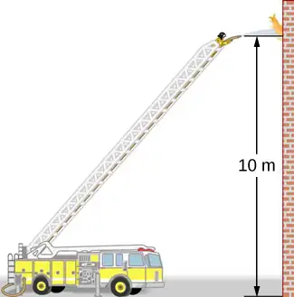
Strategy
We must use Bernoulli’s equation to solve for the pressure, since depth is not constant.
Solution
Bernoulli’s equation is
where subscripts 1 and 2 refer to the initial conditions at ground level and the final conditions inside the nozzle, respectively. We must first find the speeds \(v_{1}\) and \(v_{2}\). Since \(Q=A_{1}v_{1}\), we get
Similarly, we find
This rather large speed is helpful in reaching the fire. Now, taking \(h_{1}\) to be zero, we solve Bernoulli’s equation for \(p_{2}\):
Substituting known values yields
Significance
This value is a gauge pressure, since the initial pressure was given as a gauge pressure. Thus, the nozzle pressure equals atmospheric pressure because the water exits into the atmosphere without changes in its conditions.
14.7 Viscosity and Turbulence¶
Learning Objectives
By the end of this section, you will be able to:
- Explain what viscosity is
- Calculate flow and resistance with Poiseuille's law
- Explain how pressure drops due to resistance
- Calculate the Reynolds number for an object moving through a fluid
- Use the Reynolds number for a system to determine whether it is laminar or turbulent
- Describe the conditions under which an object has a terminal speed
In Applications of Newton’s Laws, which introduced the concept of friction, we saw that an object sliding across the floor with an initial velocity and no applied force comes to rest due to the force of friction. Friction depends on the types of materials in contact and is proportional to the normal force. We also discussed drag and air resistance in that same chapter. We explained that at low speeds, the drag is proportional to the velocity, whereas at high speeds, drag is proportional to the velocity squared. In this section, we introduce the forces of friction that act on fluids in motion. For example, a fluid flowing through a pipe is subject to resistance, a type of friction, between the fluid and the walls. Friction also occurs between the different layers of fluid. These resistive forces affect the way the fluid flows through the pipe.
Viscosity and Laminar Flow¶
When you pour yourself a glass of juice, the liquid flows freely and quickly. But if you pour maple syrup on your pancakes, that liquid flows slowly and sticks to the pitcher. The difference is fluid friction, both within the fluid itself and between the fluid and its surroundings. We call this property of fluids viscosity. Juice has low viscosity, whereas syrup has high viscosity.
The precise definition of viscosity is based on laminar, or nonturbulent, flow. Figure 14.34 shows schematically how laminar and turbulent flow differ. When flow is laminar, layers flow without mixing. When flow is turbulent, the layers mix, and significant velocities occur in directions other than the overall direction of flow.
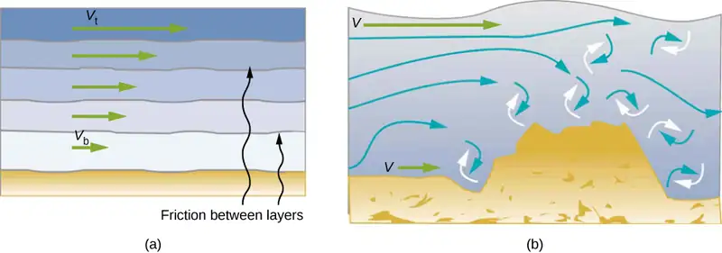
Turbulence is a fluid flow in which layers mix together via eddies and swirls. It has two main causes. First, any obstruction or sharp corner, such as in a faucet, creates turbulence by imparting velocities perpendicular to the flow. Second, high speeds cause turbulence. The drag between adjacent layers of fluid and between the fluid and its surroundings can form swirls and eddies if the speed is great enough. In Figure 14.35, the speed of the accelerating smoke reaches the point that it begins to swirl due to the drag between the smoke and the surrounding air.
Figure 14.36 shows how viscosity is measured for a fluid. The fluid to be measured is placed between two parallel plates. The bottom plate is held fixed, while the top plate is moved to the right, dragging fluid with it. The layer (or lamina) of fluid in contact with either plate does not move relative to the plate, so the top layer moves at speed v while the bottom layer remains at rest. Each successive layer from the top down exerts a force on the one below it, trying to drag it along, producing a continuous variation in speed from v to 0 as shown. Care is taken to ensure that the flow is laminar, that is, the layers do not mix. The motion in the figure is like a continuous shearing motion. Fluids have zero shear strength, but the rate at which they are sheared is related to the same geometrical factors A and L as is shear deformation for solids. In the diagram, the fluid is initially at rest. The layer of fluid in contact with the moving plate is accelerated and starts to move due to the internal friction between moving plate and the fluid. The next layer is in contact with the moving layer; since there is internal friction between the two layers, it also accelerates, and so on through the depth of the fluid. There is also internal friction between the stationary plate and the lowest layer of fluid, next to the station plate. The force is required to keep the plate moving at a constant velocity due to the internal friction.
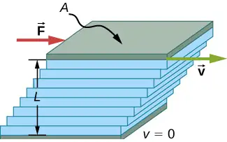
A force F is required to keep the top plate in Figure 14.36 moving at a constant velocity v, and experiments have shown that this force depends on four factors. First, F is directly proportional to v (until the speed is so high that turbulence occurs—then a much larger force is needed, and it has a more complicated dependence on v). Second, F is proportional to the area A of the plate. This relationship seems reasonable, since A is directly proportional to the amount of fluid being moved. Third, F is inversely proportional to the distance between the plates L. This relationship is also reasonable; L is like a lever arm, and the greater the lever arm, the less the force that is needed. Fourth, F is directly proportional to the coefficient of viscosity, \(\eta\). The greater the viscosity, the greater the force required. These dependencies are combined into the equation
This equation gives us a working definition of fluid viscosity \(\eta\). Solving for \(\eta\) gives
equation callout
which defines viscosity in terms of how it is measured.
The SI unit of viscosity is \(\text{N}\cdot\text{m/}[(\text{m/s})\text{m}^{2}]=(\text{N/m}^{2})\text{s or Pa}\cdot\text{s}\). Table 14.4 lists the coefficients of viscosity for various fluids. Viscosity varies from one fluid to another by several orders of magnitude. As you might expect, the viscosities of gases are much less than those of liquids, and these viscosities often depend on temperature.
Table 14.4 Coefficients of Viscosity of Various Fluids
| Fluid | Temperature \((\text{°C)}\) |
Viscosity \(\eta\) \(\times{10}^{-3}\) Pa ⋅ s |
|---|---|---|
| Air | 0 | 0.0171 |
| 20 | 0.0181 | |
| 40 | 0.0190 | |
| 100 | 0.0218 | |
| Ammonia | 20 | 0.00974 |
| Carbon dioxide | 20 | 0.0147 |
| Helium | 20 | 0.0196 |
| Hydrogen | 0 | 0.0090 |
| Mercury | 20 | 0.0450 |
| Oxygen | 20 | 0.0203 |
| Steam | 100 | 0.0130 |
| Liquid water | 0 | 1.792 |
| 20 | 1.002 | |
| 37 | 0.6947 | |
| 40 | 0.653 | |
| 100 | 0.282 | |
| Whole blood | 20 | 3.015 |
| 37 | 2.084 | |
| Blood plasma | 20 | 1.810 |
| 37 | 1.257 | |
| Ethyl alcohol | 20 | 1.20 |
| Methanol | 20 | 0.584 |
| Oil (heavy machine) | 20 | 660 |
| Oil (motor, SAE 10) | 30 | 200 |
| Oil (olive) | 20 | 138 |
| Glycerin | 20 | 1500 |
| Honey | 20 | 2000–10000 |
| Maple syrup | 20 | 2000–3000 |
| Milk | 20 | 3.0 |
| Oil (corn) | 20 | 65 |
Laminar Flow Confined to Tubes: Poiseuille’s Law¶
What causes flow? The answer, not surprisingly, is a pressure difference. In fact, there is a very simple relationship between horizontal flow and pressure. Flow rate Q is in the direction from high to low pressure. The greater the pressure differential between two points, the greater the flow rate. This relationship can be stated as
where \(p_{1}\) and \(p_{2}\) are the pressures at two points, such as at either end of a tube, and R is the resistance to flow. The resistance R includes everything, except pressure, that affects flow rate. For example, R is greater for a long tube than for a short one. The greater the viscosity of a fluid, the greater the value of R. Turbulence greatly increases R, whereas increasing the diameter of a tube decreases R.
If viscosity is zero, the fluid is frictionless and the resistance to flow is also zero. Comparing frictionless flow in a tube to viscous flow, as in Figure 14.37, we see that for a viscous fluid, speed is greatest at midstream because of drag at the boundaries. We can see the effect of viscosity in a Bunsen burner flame [part (c)], even though the viscosity of natural gas is small.
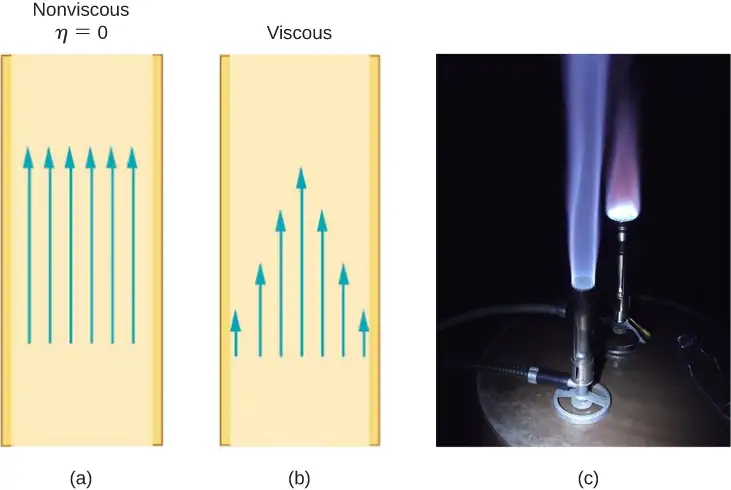
The resistance R to laminar flow of an incompressible fluid with viscosity \(\eta\) through a horizontal tube of uniform radius r and length l, is given by
equation callout
This equation is called Poiseuille’s law for resistance, named after the French scientist J. L. Poiseuille (1799–1869), who derived it in an attempt to understand the flow of blood through the body.
Let us examine Poiseuille’s expression for R to see if it makes good intuitive sense. We see that resistance is directly proportional to both fluid viscosity \(\eta\) and the length l of a tube. After all, both of these directly affect the amount of friction encountered—the greater either is, the greater the resistance and the smaller the flow. The radius r of a tube affects the resistance, which again makes sense, because the greater the radius, the greater the flow (all other factors remaining the same). But it is surprising that r is raised to the fourth power in Poiseuille’s law. This exponent means that any change in the radius of a tube has a very large effect on resistance. For example, doubling the radius of a tube decreases resistance by a factor of \(2^{4}=16\).
Taken together, \(Q=\frac{p_{2}-p_{1}}{R}\) and \(R=\frac{8\eta l}{\pi r^{4}}\) give the following expression for flow rate:
equation callout
This equation describes laminar flow through a tube. It is sometimes called Poiseuille’s law for laminar flow, or simply Poiseuille’s law (Figure 14.38).
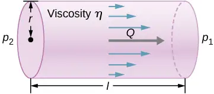
Example 14.8 Using Flow Rate: Air Conditioning Systems
An air conditioning system is being designed to supply air at a gauge pressure of 0.054 Pa at a temperature of \(20\:{}^{\circ}\text{C}.\) The air is sent through an insulated, round conduit with a diameter of 18.00 cm. The conduit is 20-meters long and is open to a room at atmospheric pressure 101.30 kPa. The room has a length of 12 meters, a width of 6 meters, and a height of 3 meters. (a) What is the volume flow rate through the pipe, assuming laminar flow? (b) Estimate the length of time to completely replace the air in the room. (c) The builders decide to save money by using a conduit with a diameter of 9.00 cm. What is the new flow rate?
Strategy
Assuming laminar flow, Poiseuille’s law states that
We need to compare the conduit radius before and after the flow rate reduction. Note that we are given the diameter of the conduit, so we must divide by two to get the radius.
Solution
a. Assuming a constant pressure difference and using the viscosity \(\eta=0.0181\:\text{mPa}\cdot\text{s}\),
b. Assuming constant flow \(Q=\frac{dV}{dt}\approx\frac{\Delta V}{\Delta t}\)
c. Using laminar flow, Poiseuille’s law yields
Thus, the radius of the conduit decreases by half reduces the flow rate to 6.25% of the original value.
Significance
In general, assuming laminar flow, decreasing the radius has a more dramatic effect than changing the length. If the length is increased and all other variables remain constant, the flow rate is decreased:
Doubling the length cuts the flow rate to one-half the original flow rate.
If the radius is decreased and all other variables remain constant, the volume flow rate decreases by a much larger factor.
Cutting the radius in half decreases the flow rate to one-sixteenth the original flow rate.
Flow and Resistance as Causes of Pressure Drops¶
Water pressure in homes is sometimes lower than normal during times of heavy use, such as hot summer days. The drop in pressure occurs in the water main before it reaches individual homes. Let us consider flow through the water main as illustrated in Figure 14.39. We can understand why the pressure \(p_{1}\) to the home drops during times of heavy use by rearranging the equation for flow rate:
In this case, \(p_{2}\) is the pressure at the water works and R is the resistance of the water main. During times of heavy use, the flow rate Q is large. This means that \(p_{2}-p_{1}\) must also be large. Thus \(p_{1}\) must decrease. It is correct to think of flow and resistance as causing the pressure to drop from \(p_{2}\) to \(p_{1}\). The equation \(p_{2}-p_{1}=RQ\) is valid for both laminar and turbulent flows.
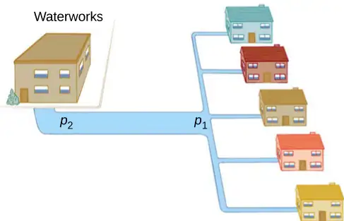
We can also use \(p_{2}-p_{1}=RQ\) to analyze pressure drops occurring in more complex systems in which the tube radius is not the same everywhere. Resistance is much greater in narrow places, such as in an obstructed coronary artery. For a given flow rate Q, the pressure drop is greatest where the tube is most narrow. This is how water faucets control flow. Additionally, R is greatly increased by turbulence, and a constriction that creates turbulence greatly reduces the pressure downstream. Plaque in an artery reduces pressure and hence flow, both by its resistance and by the turbulence it creates.
Measuring Turbulence¶
An indicator called the Reynolds number \(N_{\text{R}}\) can reveal whether flow is laminar or turbulent. For flow in a tube of uniform diameter, the Reynolds number is defined as
where \(\rho\) is the fluid density, v its speed, \(\eta\) its viscosity, and r the tube radius. The Reynolds number is a dimensionless quantity. Experiments have revealed that \(N_{\text{R}}\) is related to the onset of turbulence. For \(N_{\text{R}}\) below about 2000, flow is laminar. For \(N_{\text{R}}\) above about 3000, flow is turbulent.
For values of \(N_{\text{R}}\) between about 2000 and 3000, flow is unstable—that is, it can be laminar, but small obstructions and surface roughness can make it turbulent, and it may oscillate randomly between being laminar and turbulent. In fact, the flow of a fluid with a Reynolds number between 2000 and 3000 is a good example of chaotic behavior. A system is defined to be chaotic when its behavior is so sensitive to some factor that it is extremely difficult to predict. It is difficult, but not impossible, to predict whether flow is turbulent or not when a fluid’s Reynold’s number falls in this range due to extremely sensitive dependence on factors like roughness and obstructions on the nature of the flow. A tiny variation in one factor has an exaggerated (or nonlinear) effect on the flow.
Example 14.9 Using Flow Rate: Turbulent Flow or Laminar Flow
In Example 14.8, we found the volume flow rate of an air conditioning system to be \(Q=3.84\:\times\:{10}^{-3}\:\text{m}^{3}\text{/s}.\) This calculation assumed laminar flow. (a) Was this a good assumption? (b) At what velocity would the flow become turbulent?
Strategy
To determine if the flow of air through the air conditioning system is laminar, we first need to find the velocity, which can be found by
Then we can calculate the Reynold’s number, using the equation below, and determine if it falls in the range for laminar flow
Solution
a. Using the values given:
Since the Reynolds number is 1835 < 2000, the flow is laminar and not turbulent. The assumption that the flow was laminar is valid.
b. To find the maximum speed of the air to keep the flow laminar, consider the Reynold’s number.
Significance
When transferring a fluid from one point to another, it desirable to limit turbulence. Turbulence results in wasted energy, as some of the energy intended to move the fluid is dissipated when eddies are formed. In this case, the air conditioning system will become less efficient once the velocity exceeds 0.16 m/s, since this is the point at which turbulence will begin to occur.
Chapter Review¶
Key Terms¶
- absolute pressure
- sum of gauge pressure and atmospheric pressure
- Archimedes’ principle
- buoyant force on an object equals the weight of the fluid it displaces
- Bernoulli’s equation
- equation resulting from applying conservation of energy to an incompressible frictionless fluid: \(p+\frac{1}{2}\rho v^{2}+\rho gh=\text{constant},\) throughout the fluid
- Bernoulli’s principle
- Bernoulli’s equation applied at constant depth: \(p_{1}+\frac{1}{2}\rho v_{1}^{2}=p_{2}+\frac{1}{2}\rho v_{2}^{2}\)
- buoyant force
- net upward force on any object in any fluid due to the pressure difference at different depths
- density
- mass per unit volume of a substance or object
- flow rate
- abbreviated Q, it is the volume V that flows past a particular point during a time t, or \(Q=dV\text{/}dt\)
- fluids
- liquids and gases; a fluid is a state of matter that yields to shearing forces
- gauge pressure
- pressure relative to atmospheric pressure
- hydraulic jack
- simple machine that uses cylinders of different diameters to distribute force
- hydrostatic equilibrium
- state at which water is not flowing, or is static
- ideal fluid
- fluid with negligible viscosity
- laminar flow
- type of fluid flow in which layers do not mix
- Pascal’s principle
- change in pressure applied to an enclosed fluid is transmitted undiminished to all portions of the fluid and to the walls of its container
- Poiseuille’s law
- rate of laminar flow of an incompressible fluid in a tube: \(Q=\frac{(p_{2}-p_{1})\pi r^{4}}{8\eta l}.\)
- Poiseuille’s law for resistance
- resistance to laminar flow of an incompressible fluid in a tube: \(R=\frac{8\eta l}{\pi r^{4}}\)
- pressure
- force per unit area exerted perpendicular to the area over which the force acts
- Reynolds number
- dimensionless parameter that can reveal whether a particular flow is laminar or turbulent
- specific gravity
- ratio of the density of an object to a fluid (usually water)
- turbulence
- fluid flow in which layers mix together via eddies and swirls
- turbulent flow
- type of fluid flow in which layers mix together via eddies and swirls
- viscosity
- measure of the internal friction in a fluid
Key Equations¶
| Density of a sample at constant density | \(\rho=\frac{m}{V}\) |
| Pressure | \(p=\frac{F}{A}\) |
| Pressure at a depth h in a fluid of constant density | \(p=p_{0}+\rho gh\) |
| Change of pressure with height in a constant-density fluid |
\(\frac{dp}{dy}=-\rho g\) |
| Absolute pressure | \(p_{\text{abs}}=p_{\text{g}}+p_{\text{atm}}\) |
| Pascal’s principle | \(\frac{F_{1}}{A_{1}}=\frac{F_{2}}{A_{2}}\) |
| Volume flow rate | \(Q=\frac{dV}{dt}\) |
| Continuity equation (constant density) | \(A_{1}v_{1}=A_{2}v_{2}\) |
| Continuity equation (general form) | \(\rho_{1}A_{1}v_{1}=\rho_{2}A_{2}v_{2}\) |
| Bernoulli’s equation | \(p+\frac{1}{2}\rho v^{2}+\rho gy=\text{constant}\) |
| Viscosity | \(\eta=\frac{FL}{vA}\) |
| Poiseuille’s law for resistance | \(R=\frac{8\eta l}{\pi r^{4}}\) |
| Poiseuille’s law | \(Q=\frac{(p_{2}-p_{1})\pi r^{4}}{8\eta l}\) |
Summary¶
14.1 Fluids, Density, and Pressure¶
- A fluid is a state of matter that yields to sideways or shearing forces. Liquids and gases are both fluids. Fluid statics is the physics of stationary fluids.
- Density is the mass per unit volume of a substance or object, defined as \(\rho=m\text{/}V.\) The SI unit of density is \(\text{kg/m}^{3}.\)
- Pressure is the force per unit perpendicular area over which the force is applied, \(p=F\text{/}A.\) The SI unit of pressure is the pascal: \(1\:\text{Pa}=1\:\text{N/m}^{2}\).
- Pressure due to the weight of a liquid of constant density is given by \(p=\rho\:gh\), where p is the pressure, h is the depth of the liquid, \(\rho\) is the density of the liquid, and g is the acceleration due to gravity.
14.2 Measuring Pressure¶
- Gauge pressure is the pressure relative to atmospheric pressure.
- Absolute pressure is the sum of gauge pressure and atmospheric pressure.
- Open-tube manometers have U-shaped tubes and one end is always open. They are used to measure pressure. A mercury barometer is a device that measures atmospheric pressure.
- The SI unit of pressure is the pascal (Pa), but several other units are commonly used.
14.3 Pascal's Principle and Hydraulics¶
- Pressure is force per unit area.
- A change in pressure applied to an enclosed fluid is transmitted undiminished to all portions of the fluid and to the walls of its container.
- A hydraulic system is an enclosed fluid system used to exert forces.
14.4 Archimedes’ Principle and Buoyancy¶
- Buoyant force is the net upward force on any object in any fluid. If the buoyant force is greater than the object’s weight, the object will rise to the surface and float. If the buoyant force is less than the object’s weight, the object will sink. If the buoyant force equals the object’s weight, the object can remain suspended at its present depth. The buoyant force is always present and acting on any object immersed either partially or entirely in a fluid.
- Archimedes’ principle states that the buoyant force on an object equals the weight of the fluid it displaces.
14.5 Fluid Dynamics¶
- Flow rate Q is defined as the volume V flowing past a point in time t, or \(Q=\frac{dV}{dt}\) where V is volume and t is time. The SI unit of flow rate is \(\text{m}^{3}\text{/s,}\) but other rates can be used, such as L/min.
- Flow rate and velocity are related by \(Q=Av\) where A is the cross-sectional area of the flow and v is its average velocity.
- The equation of continuity states that for an incompressible fluid, the mass flowing into a pipe must equal the mass flowing out of the pipe.
14.6 Bernoulli’s Equation¶
-
Bernoulli’s equation states that the sum on each side of the following equation is constant, or the same at any two points in an incompressible frictionless fluid:
\[ p_{1}+\frac{1}{2}\rho v_{1}^{2}+\rho gh_{1}=p_{2}+\frac{1}{2}\rho v_{2}^{2}+\rho gh_{2}. \] -
Bernoulli’s principle is Bernoulli’s equation applied to situations in which the height of the fluid is constant. The terms involving depth (or height h) subtract out, yielding
\[ p_{1}+\frac{1}{2}\rho v_{1}^{2}=p_{2}+\frac{1}{2}\rho v_{2}^{2}. \] -
Bernoulli’s principle has many applications, including entrainment and velocity measurement.
14.7 Viscosity and Turbulence¶
-
Laminar flow is characterized by smooth flow of the fluid in layers that do not mix.
-
Turbulence is characterized by eddies and swirls that mix layers of fluid together.
-
Fluid viscosity \(\eta\) is due to friction within a fluid.
-
Flow is proportional to pressure difference and inversely proportional to resistance:
\[ Q=\frac{p-2p_{1}}{R}. \] -
The pressure drop caused by flow and resistance is given by \(p_{2}-p_{1}=RQ\).
-
The Reynolds number \(N_{\text{R}}\) can reveal whether flow is laminar or turbulent. It is \(N_{\text{R}}=\frac{2\rho vr}{\eta}\).
-
For \(N_{\text{R}}\) below about 2000, flow is laminar. For \(N_{\text{R}}\) above about 3000, flow is turbulent. For values of \(N_{\text{R}}\) between 2000 and 3000, it may be either or both.
Conceptual Questions¶
14.1 Fluids, Density, and Pressure¶
1. Which of the following substances are fluids at room temperature and atmospheric pressure: air, mercury, water, glass?
Answer
Mercury and water are liquid at room temperature and atmospheric pressure. Air is a gas at room temperature and atmospheric pressure. Glass is an amorphous solid (non-crystalline) material at room temperature and atmospheric pressure. At one time, it was thought that glass flowed, but flowed very slowly. This theory came from the observation that old glass planes were thicker at the bottom. It is now thought unlikely that this theory is accurate.
2. Why are gases easier to compress than liquids and solids?
3. Explain how the density of air varies with altitude.
Answer
The density of air decreases with altitude. For a column of air of a constant temperature, the density decreases exponentially with altitude. This is a fair approximation, but since the temperature does change with altitude, it is only an approximation.
4. The image shows a glass of ice water filled to the brim. Will the water overflow when the ice melts? Explain your answer.
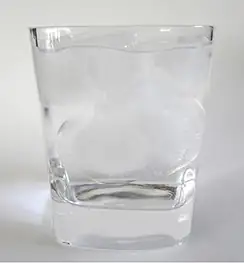
5. How is pressure related to the sharpness of a knife and its ability to cut?
Answer
Pressure is force divided by area. If a knife is sharp, the force applied to the cutting surface is divided over a smaller area than the same force applied with a dull knife. This means that the pressure would be greater for the sharper knife, increasing its ability to cut.
6. Why is a force exerted by a static fluid on a surface always perpendicular to the surface?
7. Imagine that in a remote location near the North Pole, a chunk of ice floats in a lake. Next to the lake, a glacier with the same volume as the floating ice sits on land. If both chunks of ice should melt due to rising global temperatures, and the melted ice all goes into the lake, which one would cause the level of the lake to rise the most? Explain.
Answer
If the two chunks of ice had the same volume, they would produce the same volume of water. The glacier would cause the greatest rise in the lake, however, because part of the floating chunk of ice is already submerged in the lake, and is thus already contributing to the lake’s level.
8. In ballet, dancing en pointe (on the tips of the toes) is much harder on the toes than normal dancing or walking. Explain why, in terms of pressure.
9. Atmospheric pressure exerts a large force (equal to the weight of the atmosphere above your body—about 10 tons) on the top of your body when you are lying on the beach sunbathing. Why are you able to get up?
Answer
The pressure is acting all around your body, assuming you are not in a vacuum.
10. Why does atmospheric pressure decrease more rapidly than linearly with altitude?
11. The image shows how sandbags placed around a leak outside a river levee can effectively stop the flow of water under the levee. Explain how the small amount of water inside the column of sandbags is able to balance the much larger body of water behind the levee.
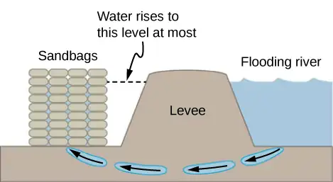
Answer
Because the river level is very high, it has started to leak under the levee. Sandbags are placed around the leak, and the water held by them rises until it is the same level as the river, at which point the water there stops rising. The sandbags will absorb water until the water reaches the height of the water in the levee.
12. Is there a net force on a dam due to atmospheric pressure? Explain your answer.
13. Does atmospheric pressure add to the gas pressure in a rigid tank? In a toy balloon? When, in general, does atmospheric pressure not affect the total pressure in a fluid?
Answer
Atmospheric pressure does not affect the gas pressure in a rigid tank, but it does affect the pressure inside a balloon. In general, atmospheric pressure affects fluid pressure unless the fluid is enclosed in a rigid container.
14. You can break a strong wine bottle by pounding a cork into it with your fist, but the cork must press directly against the liquid filling the bottle—there can be no air between the cork and liquid. Explain why the bottle breaks only if there is no air between the cork and liquid.
14.2 Measuring Pressure¶
15. Explain why the fluid reaches equal levels on either side of a manometer if both sides are open to the atmosphere, even if the tubes are of different diameters.
Answer
The pressure of the atmosphere is due to the weight of the air above. The pressure, force per area, on the manometer will be the same at the same depth of the atmosphere.
14.3 Pascal's Principle and Hydraulics¶
16. Suppose the master cylinder in a hydraulic system is at a greater height than the cylinder it is controlling. Explain how this will affect the force produced at the cylinder that is being controlled.
14.4 Archimedes’ Principle and Buoyancy¶
17. More force is required to pull the plug in a full bathtub than when it is empty. Does this contradict Pascal’s principle? Explain your answer.
Answer
Not at all. Pascal’s principle says that the change in the pressure is exerted through the fluid. The reason that the full tub requires more force to pull the plug is because of the weight of the water above the plug.
18. Do fluids exert buoyant forces in a “weightless” environment, such as in the space shuttle? Explain your answer.
19. Will the same ship float higher in salt water than in freshwater? Explain your answer.
Answer
The buoyant force is equal to the weight of the fluid displaced. The greater the density of the fluid, the less fluid that is needed to be displaced to have the weight of the object be supported and to float. Since the density of salt water is higher than that of fresh water, less salt water will be displaced, and the ship will float higher.
20. Marbles dropped into a partially filled bathtub sink to the bottom. Part of their weight is supported by buoyant force, yet the downward force on the bottom of the tub increases by exactly the weight of the marbles. Explain why.
14.5 Fluid Dynamics¶
21. Many figures in the text show streamlines. Explain why fluid velocity is greatest where streamlines are closest together. (Hint: Consider the relationship between fluid velocity and the cross-sectional area through which the fluid flows.)
Answer
Consider two different pipes connected to a single pipe of a smaller diameter, with fluid flowing from the two pipes into the smaller pipe. Since the fluid is forced through a smaller cross-sectional area, it must move faster as the flow lines become closer together. Likewise, if a pipe with a large radius feeds into a pipe with a small radius, the stream lines will become closer together and the fluid will move faster.
14.6 Bernoulli’s Equation¶
22. You can squirt water from a garden hose a considerably greater distance by partially covering the opening with your thumb. Explain how this works.
23. Water is shot nearly vertically upward in a decorative fountain and the stream is observed to broaden as it rises. Conversely, a stream of water falling straight down from a faucet narrows. Explain why.
Answer
The mass of water that enters a cross-sectional area must equal the amount that leaves. From the continuity equation, we know that the density times the area times the velocity must remain constant. Since the density of the water does not change, the velocity times the cross-sectional area entering a region must equal the cross-sectional area times the velocity leaving the region. Since the velocity of the fountain stream decreases as it rises due to gravity, the area must increase. Since the velocity of the faucet stream speeds up as it falls, the area must decrease.
24. Look back to Figure 14.29. Answer the following two questions. Why is \(p_{o}\) less than atmospheric? Why is \(p_{o}\) greater than \(p_{i}\)?
25. A tube with a narrow segment designed to enhance entrainment is called a Venturi, such as shown below. Venturis are very commonly used in carburetors and aspirators. How does this structure bolster entrainment?
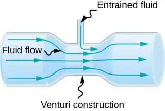
Answer
When the tube narrows, the fluid is forced to speed up, thanks to the continuity equation and the work done on the fluid. Where the tube is narrow, the pressure decreases. This means that the entrained fluid will be pushed into the narrow area.
26. Some chimney pipes have a T-shape, with a crosspiece on top that helps draw up gases whenever there is even a slight breeze. Explain how this works in terms of Bernoulli’s principle.
27. Is there a limit to the height to which an entrainment device can raise a fluid? Explain your answer.
Answer
The work done by pressure can be used to increase the kinetic energy and to gain potential energy. As the height becomes larger, there is less energy left to give to kinetic energy. Eventually, there will be a maximum height that cannot be overcome.
28. Why is it preferable for airplanes to take off into the wind rather than with the wind?
29. Roofs are sometimes pushed off vertically during a tropical cyclone, and buildings sometimes explode outward when hit by a tornado. Use Bernoulli’s principle to explain these phenomena.
Answer
Because of the speed of the air outside the building, the pressure outside the house decreases. The greater pressure inside the building can essentially blow off the roof or cause the building to explode.
30. It is dangerous to stand close to railroad tracks when a rapidly moving commuter train passes. Explain why atmospheric pressure would push you toward the moving train.
31. Water pressure inside a hose nozzle can be less than atmospheric pressure due to the Bernoulli effect. Explain in terms of energy how the water can emerge from the nozzle against the opposing atmospheric pressure.
Answer
The air inside the hose has kinetic energy due to its motion. The kinetic energy can be used to do work against the pressure difference.
32. David rolled down the window on his car while driving on the freeway. An empty plastic bag on the floor promptly flew out the window. Explain why.
33. Based on Bernoulli’s equation, what are three forms of energy in a fluid? (Note that these forms are conservative, unlike heat transfer and other dissipative forms not included in Bernoulli’s equation.)
Answer
Potential energy due to position, kinetic energy due to velocity, and the work done by a pressure difference.
34. The old rubber boot shown below has two leaks. To what maximum height can the water squirt from Leak 1? How does the velocity of water emerging from Leak 2 differ from that of Leak 1? Explain your responses in terms of energy.
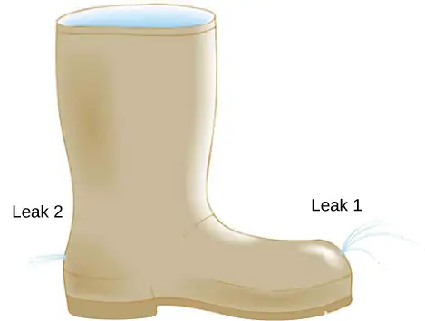
35. Water pressure inside a hose nozzle can be less than atmospheric pressure due to the Bernoulli effect. Explain in terms of energy how the water can emerge from the nozzle against the opposing atmospheric pressure.
Answer
The water has kinetic energy due to its motion. This energy can be converted into work against the difference in pressure.
14.7 Viscosity and Turbulence¶
36. Explain why the viscosity of a liquid decreases with temperature, that is, how might an increase in temperature reduce the effects of cohesive forces in a liquid? Also explain why the viscosity of a gas increases with temperature, that is, how does increased gas temperature create more collisions between atoms and molecules?
37. When paddling a canoe upstream, it is wisest to travel as near to the shore as possible. When canoeing downstream, it is generally better to stay near the middle. Explain why.
Answer
The water in the center of the stream is moving faster than the water near the shore due to resistance between the water and the shore and between the layers of fluid. There is also probably more turbulence near the shore, which will also slow the water down. When paddling up stream, the water pushes against the canoe, so it is better to stay near the shore to minimize the force pushing against the canoe. When moving downstream, the water pushes the canoe, increasing its velocity, so it is better to stay in the middle of the stream to maximize this effect.
38. Plumbing usually includes air-filled tubes near water faucets (see the following figure). Explain why they are needed and how they work.
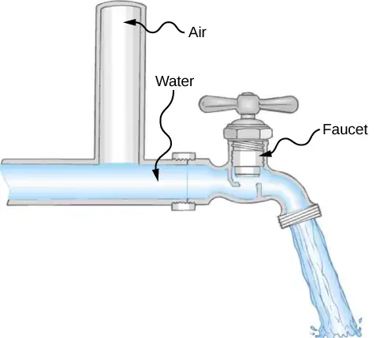
39. Doppler ultrasound can be used to measure the speed of blood in the body. If there is a partial constriction of an artery, where would you expect blood speed to be greatest: at or after the constriction? What are the two distinct causes of higher resistance in the constriction?
Answer
You would expect the speed to be slower after the obstruction. Resistance is increased due to the reduction in size of the opening, and turbulence will be created because of the obstruction, both of which will clause the fluid to slow down.
40. Sink drains often have a device such as that shown below to help speed the flow of water. How does this work?
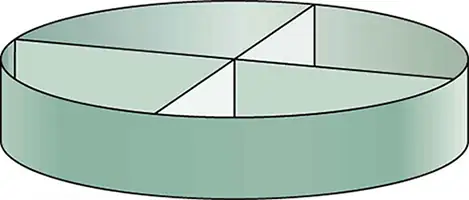
Problems¶
14.1 Fluids, Density, and Pressure¶
41. Gold is sold by the troy ounce (31.103 g). What is the volume of 1 troy ounce of pure gold?
Answer
1.610 \(\text{cm}^{3}\)
42. Mercury is commonly supplied in flasks containing 34.5 kg (about 76 lb.). What is the volume in liters of this much mercury?
43. What is the mass of a deep breath of air having a volume of 2.00 L? Discuss the effect taking such a breath has on your body’s volume and density.
Answer
The mass is 2.58 g. The volume of your body increases by the volume of air you inhale. The average density of your body decreases when you take a deep breath because the density of air is substantially smaller than the average density of the body.
44. A straightforward method of finding the density of an object is to measure its mass and then measure its volume by submerging it in a graduated cylinder. What is the density of a 240-g rock that displaces \(89.0\:\text{cm}^{3}\) of water? (Note that the accuracy and practical applications of this technique are more limited than a variety of others that are based on Archimedes’ principle.)
45. Suppose you have a coffee mug with a circular cross-section and vertical sides (uniform radius). What is its inside radius if it holds 375 g of coffee when filled to a depth of 7.50 cm? Assume coffee has the same density as water.
Answer
3.99 cm
46. A rectangular gasoline tank can hold 50.0 kg of gasoline when full. What is the depth of the tank if it is 0.500-m wide by 0.900-m long? (b) Discuss whether this gas tank has a reasonable volume for a passenger car.
47. A trash compactor can compress its contents to 0.350 times their original volume. Neglecting the mass of air expelled, by what factor is the density of the rubbish increased?
Answer
2.86 times denser
48. A 2.50-kg steel gasoline can holds 20.0 L of gasoline when full. What is the average density of the full gas can, taking into account the volume occupied by steel as well as by gasoline?
49. What is the density of 18.0-karat gold that is a mixture of 18 parts gold, 5 parts silver, and 1 part copper? (These values are parts by mass, not volume.) Assume that this is a simple mixture having an average density equal to the weighted densities of its constituents.
Answer
\(15.6\:\text{g/cm}^{3}\)
50. The tip of a nail exerts tremendous pressure when hit by a hammer because it exerts a large force over a small area. What force must be exerted on a nail with a circular tip of 1.00-mm diameter to create a pressure of \(3.00\:\times\:{10}^{9}\:\text{N/m}^{2}\text{?}\) (This high pressure is possible because the hammer striking the nail is brought to rest in such a short distance.)
51. A glass tube contains mercury. What would be the height of the column of mercury which would create pressure equal to 1.00 atm?
Answer
\(0.760\:\text{m}=76.0\:\text{cm}=760\:\text{mm}\)
52. The greatest ocean depths on Earth are found in the Marianas Trench near the Philippines. Calculate the pressure due to the ocean at the bottom of this trench, given its depth is 11.0 km and assuming the density of seawater is constant all the way down.
53. Verify that the SI unit of \(h\rho g\) is \(\text{N/m}^{2}\).
Answer
proof
54. What pressure is exerted on the bottom of a gas tank that is 0.500-m wide and 0.900-m long and can hold 50.0 kg of gasoline when full?
55. A dam is used to hold back a river. The dam has a height \(H=12\:\text{m}\) and a width \(W=10\:\text{m}.\) Assume that the density of the water is \(\rho=1000\:\text{kg/m}^{3}.\) (a) Determine the net force on the dam. (b) Why does the thickness of the dam increase with depth?
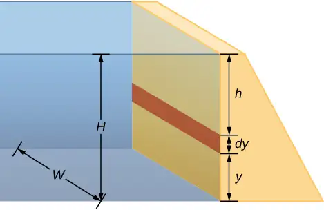
Answer
a. Pressure at \(h=7.06\:\times\:{10}^{6}\text{N}\);
b. The pressure increases as the depth increases, so the dam must be built thicker toward the bottom to withstand the greater pressure.
14.2 Measuring Pressure¶
56. Find the gauge and absolute pressures in the balloon and peanut jar shown in Figure 14.12, assuming the manometer connected to the balloon uses water and the manometer connected to the jar contains mercury. Express in units of centimeters of water for the balloon and millimeters of mercury for the jar, taking \(h=0.0500\text{m}\) for each.
57. How tall must a water-filled manometer be to measure blood pressure as high as 300 mm Hg?
Answer
4.08 m
58. Assuming bicycle tires are perfectly flexible and support the weight of bicycle and rider by pressure alone, calculate the total area of the tires in contact with the ground if a bicycle and rider have a total mass of 80.0 kg, and the gauge pressure in the tires is \(3.50\:\times\:{10}^{5}\:\text{Pa}\).
14.3 Pascal's Principle and Hydraulics¶
59. How much pressure is transmitted in the hydraulic system considered in Example 14.3? Express your answer in atmospheres.
Answer
251 atm
60. What force must be exerted on the master cylinder of a hydraulic lift to support the weight of a 2000-kg car (a large car) resting on a second cylinder? The master cylinder has a 2.00-cm diameter and the second cylinder has a 24.0-cm diameter.
61. A host pours the remnants of several bottles of wine into a jug after a party. The host then inserts a cork with a 2.00-cm diameter into the bottle, placing it in direct contact with the wine. The host is amazed when the host pounds the cork into place and the bottom of the jug (with a 14.0-cm diameter) breaks away. Calculate the extra force exerted against the bottom if he pounded the cork with a 120-N force.
Answer
\(5.76\:\times\:{10}^{3}\:\text{N}\:\text{extra force}\)
62. A certain hydraulic system is designed to exert a force 100 times as large as the one put into it. (a) What must be the ratio of the area of the cylinder that is being controlled to the area of the master cylinder? (b) What must be the ratio of their diameters? (c) By what factor is the distance through which the output force moves reduced relative to the distance through which the input force moves? Assume no losses due to friction.
63. Verify that work input equals work output for a hydraulic system assuming no losses due to friction. Do this by showing that the distance the output force moves is reduced by the same factor that the output force is increased. Assume the volume of the fluid is constant. What effect would friction within the fluid and between components in the system have on the output force? How would this depend on whether or not the fluid is moving?
Answer
If the system is not moving, the friction would not play a role. With friction, we know there are losses, so that \(W_{\text{o}}=W_{\text{i}}-W_{\text{f}};\) therefore, the work output is less than the work input. In other words, to account for friction, you would need to push harder on the input piston than was calculated.
14.4 Archimedes’ Principle and Buoyancy¶
64. What fraction of ice is submerged when it floats in freshwater, given the density of water at \(0\:\text{°C}\) is very close to \(1000\:\text{kg/m}^{3}\)?
65. If a person’s body has a density of \(995\:\text{kg/m}^{3}\), what fraction of the body will be submerged when floating gently in (a) freshwater? (b) In salt water with a density of \(1027\:\text{kg/m}^{3}\)?
Answer
a. 99.5% submerged; b. 96.9% submerged
66. A rock with a mass of 540 g in air is found to have an apparent mass of 342 g when submerged in water. (a) What mass of water is displaced? (b) What is the volume of the rock? (c) What is its average density? Is this consistent with the value for granite?
67. Archimedes’ principle can be used to calculate the density of a fluid as well as that of a solid. Suppose a chunk of iron with a mass of 390.0 g in air is found to have an apparent mass of 350.5 g when completely submerged in an unknown liquid. (a) What mass of fluid does the iron displace? (b) What is the volume of iron, using its density as given in Table 14.1? (c) Calculate the fluid’s density and identify it.
Answer
a. 39.5 g; b. \(50\:\text{cm}^{3}\); c. \(0.79\:\text{g/cm}^{3}\); ethyl alcohol
68. Calculate the buoyant force on a 2.00-L helium balloon. (b) Given the mass of the rubber in the balloon is 1.50 g, what is the net vertical force on the balloon if it is let go? Neglect the volume of the rubber.
69. What is the density of a woman who floats in fresh water with \(4.00\text{\%}\) of her volume above the surface? (This could be measured by placing her in a tank with marks on the side to measure how much water she displaces when floating and when held under water.) (b) What percent of her volume is above the surface when she floats in seawater?
Answer
a. \({960\:\text{kg/m}}^{3}\); b. 6.34%; She floats higher in seawater.
70. A man has a mass of 80 kg and a density of \(955\text{kg/m}^{3}\) (excluding the air in his lungs). (a) Calculate his volume. (b) Find the buoyant force air exerts on him. (c) What is the ratio of the buoyant force to his weight?
71. A simple compass can be made by placing a small bar magnet on a cork floating in water. (a) What fraction of a plain cork will be submerged when floating in water? (b) If the cork has a mass of 10.0 g and a 20.0-g magnet is placed on it, what fraction of the cork will be submerged? (c) Will the bar magnet and cork float in ethyl alcohol?
Answer
a. 0.24; b. 0.72; c. Yes, the cork will float in ethyl alcohol.
72. What percentage of an iron anchor’s weight will be supported by buoyant force when submerged in salt water?
73. Referring to Figure 14.20, prove that the buoyant force on the cylinder is equal to the weight of the fluid displaced (Archimedes’ principle). You may assume that the buoyant force is \(F_{2}-F_{1}\) and that the ends of the cylinder have equal areas\(A\). Note that the volume of the cylinder (and that of the fluid it displaces) equals \((h_{2}-h_{1})A\).
Answer
\(\begin{array}{ccc} \text{net}\:F & = & F_{2}-F_{1}=p_{2}A-p_{1}A=(p_{2}-p_{1})A=(h_{2}\rho_{\text{fl}}g-h_{1}\rho_{\text{fl}}g)A \\ & = & (h_{2}-h_{1})\rho_{\text{fl}}gA,\:\text{where}\:\rho_{\text{fl}}=\text{density of fluid}. \\ \text{net}\:F & = & (h_{2}-h_{1})A\rho_{\text{fl}}g=V_{\text{fl}}\rho_{\text{fl}}g=m_{\text{fl}}g=w_{\text{fl}} \end{array}\)
74. A 75.0-kg man floats in freshwater with 3.00% of his volume above water when his lungs are empty, and 5.00% of his volume above water when his lungs are full. Calculate the volume of air he inhales—called his lung capacity—in liters. (b) Does this lung volume seem reasonable?
14.5 Fluid Dynamics¶
75. What is the average flow rate in \(\text{cm}^{3}\text{/s}\) of gasoline to the engine of a car traveling at 100 km/h if it averages 10.0 km/L?
Answer
2.78 \(\text{cm}^{3}\text{/s}\)
76. The heart of a resting adult pumps blood at a rate of 5.00 L/min. (a) Convert this to \(\text{cm}^{3}\text{/s}\). (b) What is this rate in \(\text{m}^{3}\text{/s}\)?
77. The Huka Falls on the Waikato River is one of New Zealand’s most visited natural tourist attractions. On average, the river has a flow rate of about 300,000 L/s. At the gorge, the river narrows to 20-m wide and averages 20-m deep. (a) What is the average speed of the river in the gorge? (b) What is the average speed of the water in the river downstream of the falls when it widens to 60 m and its depth increases to an average of 40 m?
Answer
a. 0.75 m/s; b. 0.13 m/s
78. (a) Estimate the time it would take to fill a private swimming pool with a capacity of 80,000 L using a garden hose delivering 60 L/min. (b) How long would it take if you could divert a moderate size river, flowing at \({5000\:\text{m}}^{3}\text{/s}\) into the pool?
79. What is the fluid speed in a fire hose with a 9.00-cm diameter carrying 80.0 L of water per second? (b) What is the flow rate in cubic meters per second? (c) Would your answers be different if salt water replaced the fresh water in the fire hose?
Answer
a. 12.6 m/s; b. \(0.0800\:\text{m}^{3}\text{/s}\); c. No, the flow rate and the velocity are independent of the density of the fluid.
80. Water is moving at a velocity of 2.00 m/s through a hose with an internal diameter of 1.60 cm. (a) What is the flow rate in liters per second? (b) The fluid velocity in this hose’s nozzle is 15.0 m/s. What is the nozzle’s inside diameter?
81. Prove that the speed of an incompressible fluid through a constriction, such as in a Venturi tube, increases by a factor equal to the square of the factor by which the diameter decreases. (The converse applies for flow out of a constriction into a larger-diameter region.)
Answer
If the fluid is incompressible, the flow rate through both sides will be equal:
\(Q=A_{1}{\bar{v}}_{1}=A_{2}{\bar{v}}_{2},\) or \(\pi\frac{d_{1}^{2}}{4}{\bar{v}}_{1}=\pi\frac{d_{2}^{2}}{4}{\bar{v}}_{2}\Rightarrow{\bar{v}}_{2}={\bar{v}}_{1}(d_{1}^{2}\text{/}d_{2}^{2})={\bar{v}}_{1}{(d_{1}\text{/}d_{2})}^{2}\)
82. Water emerges straight down from a faucet with a 1.80-cm diameter at a speed of 0.500 m/s. (Because of the construction of the faucet, there is no variation in speed across the stream.) (a) What is the flow rate in \(\text{cm}^{3}\text{/s}\)? (b) What is the diameter of the stream 0.200 m below the faucet? Neglect any effects due to surface tension.
14.6 Bernoulli’s Equation¶
83. Verify that pressure has units of energy per unit volume.
Answer
\(\begin{array}{ccc} F & = & pA\Rightarrow p=\frac{F}{A}, \\ [p] & = & \text{N/m}^{2}=\text{N}\cdot\text{m/m}^{3}=\text{J/m}^{3}=\text{energy/volume} \end{array}\)
84. Suppose you have a wind speed gauge like the pitot tube shown in Figure 14.32. By what factor must wind speed increase to double the value of h in the manometer? Is this independent of the moving fluid and the fluid in the manometer?
85. If the pressure reading of your pitot tube is 15.0 mm Hg at a speed of 200 km/h, what will it be at 700 km/h at the same altitude?
Answer
−135 mm Hg
86. Every few years, winds in Boulder, Colorado, attain sustained speeds of 45.0 m/s (about 100 mph) when the jet stream descends during early spring. Approximately what is the force due to the Bernoulli equation on a roof having an area of \(220\text{m}^{2}\)? Typical air density in Boulder is \(1.14\text{kg/m}^{3}\), and the corresponding atmospheric pressure is \(8.89\:\times\:{10}^{4}\text{N/m}^{2}\). (Bernoulli’s principle as stated in the text assumes laminar flow. Using the principle here produces only an approximate result, because there is significant turbulence.)
87. What is the pressure drop due to the Bernoulli Effect as water goes into a 3.00-cm-diameter nozzle from a 9.00-cm-diameter fire hose while carrying a flow of 40.0 L/s? (b) To what maximum height above the nozzle can this water rise? (The actual height will be significantly smaller due to air resistance.)
Answer
a. \(1.58\:\times\:{10}^{6}\:\text{N/m}^{2}\); b. 163 m
88. (a) Using Bernoulli’s equation, show that the measured fluid speed v for a pitot tube, like the one in Figure 14.32(b), is given by \(v={\left( \frac{2\rho'gh}{\rho} \right)}^{1\text{/}2}\), where h is the height of the manometer fluid, \(\rho'\) is the density of the manometer fluid, \(\rho\) is the density of the moving fluid, and g is the acceleration due to gravity. (Note that v is indeed proportional to the square root of h, as stated in the text.) (b) Calculate v for moving air if a mercury manometer’s h is 0.200 m.
89. A container of water has a cross-sectional area of \(A=0.1\:\text{m}^{2}\). A piston sits on top of the water (see the following figure). There is a spout located 0.15 m from the bottom of the tank, open to the atmosphere, and a stream of water exits the spout. The cross sectional area of the spout is \(A_{\text{s}}=7.0\:\times\:{10}^{-4}\text{m}^{2}\). (a) What is the velocity of the water as it leaves the spout? (b) If the opening of the spout is located 1.5 m above the ground, how far from the spout does the water hit the floor? Ignore all friction and dissipative forces.
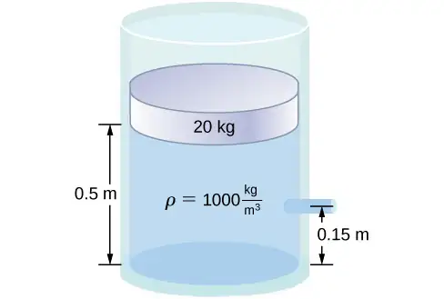
Answer
a. \(v_{2}=3.28\frac{\text{m}}{\text{s}}\);
b. \(t=0.17\:\text{s}\)
\(x=vt=1.57\:\text{m}\)
90. A fluid of a constant density flows through a reduction in a pipe. Find an equation for the change in pressure, in terms of \(v_{1},A_{1},A_{2}\), and the density.
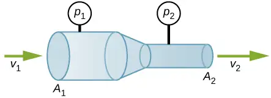
14.7 Viscosity and Turbulence¶
91. (a) Calculate the retarding force due to the viscosity of the air layer between a cart and a level air track given the following information: air temperature is \(20\:\text{°C}\), the cart is moving at 0.400 m/s, its surface area is \(2.50\:\times\:{10}^{-2}\:\text{m}^{2},\) and the thickness of the air layer is \(6.00\:\times\:{10}^{-5}\text{m}\). (b) What is the ratio of this force to the weight of the 0.300-kg cart?
Answer
a. \(3.02\:\times\:{10}^{-3}\:\text{N}\); b. \(1.03\:\times\:{10}^{-3}\)
92. The arterioles (small arteries) leading to an organ constrict in order to decrease flow to the organ. To shut down an organ, blood flow is reduced naturally to 1.00% of its original value. By what factor do the radii of the arterioles constrict?
93. A spherical particle falling at a terminal speed in a liquid must have the gravitational force balanced by the drag force and the buoyant force. The buoyant force is equal to the weight of the displaced fluid, while the drag force is assumed to be given by Stokes Law, \(F_{\text{s}}=6\pi r\eta v.\) Show that the terminal speed is given by \(v=\frac{2R^{2}g}{9\eta}(\rho_{\text{s}}-\rho_{1})\), where R is the radius of the sphere, \(\rho_{\text{s}}\) is its density, and \(\rho_{1}\) is the density of the fluid, and \(\eta\) the coefficient of viscosity.
Answer
proof
94. Using the equation of the previous problem, find the viscosity of motor oil in which a steel ball of radius 0.8 mm falls with a terminal speed of 4.32 cm/s. The densities of the ball and the oil are 7.86 and 0.88 g/mL, respectively.
95. A skydiver will reach a terminal velocity when the air drag equals their weight. For a skydiver with a large body, turbulence is a factor at high speeds. The drag force then is approximately proportional to the square of the velocity. Taking the drag force to be \(F_{\text{D}}=\frac{1}{2}\rho Av^{2},\) and setting this equal to the skydiver’s weight, find the terminal speed for a person falling “spread eagle.”
Answer
40 m/s
96. (a) Verify that a 19.0% decrease in laminar flow through a tube is caused by a 5.00% decrease in radius, assuming that all other factors remain constant. (b) What increase in flow is obtained from a 5.00% increase in radius, again assuming all other factors remain constant?
97. When physicians diagnose arterial blockages, they quote the reduction in flow rate. If the flow rate in an artery has been reduced to 10.0% of its normal value by a blood clot and the average pressure difference has increased by 20.0%, by what factor has the clot reduced the radius of the artery?
Answer
\(0.537r\); The radius is reduced to 53.7% of its normal value.
98. An oil gusher shoots crude oil 25.0 m into the air through a pipe with a 0.100-m diameter. Neglecting air resistance but not the resistance of the pipe, and assuming laminar flow, calculate the pressure at the entrance of the 50.0-m-long vertical pipe. Take the density of the oil to be \(900\:\text{kg/m}^{3}\) and its viscosity to be \(1.00(\text{N/m}^{2})\cdot\text{s}\) (or \(1.00\:\text{Pa}\cdot\text{s}\)). Note that you must take into account the pressure due to the 50.0-m column of oil in the pipe.
99. Concrete is pumped from a cement mixer to the place it is being laid, instead of being carried in wheelbarrows. The flow rate is 200 L/min through a 50.0-m-long, 8.00-cm-diameter hose, and the pressure at the pump is \(8.00\:\times\:{10}^{6}\:\text{N/m}^{2}\). (a) Calculate the resistance of the hose. (b) What is the viscosity of the concrete, assuming the flow is laminar? (c) How much power is being supplied, assuming the point of use is at the same level as the pump? You may neglect the power supplied to increase the concrete’s velocity.
Answer
a. \(2.40\:\times\:{10}^{9}\:\text{N}\cdot\text{s/m}^{5}\); b. \(48.3\:(\text{N/m}^{2})\cdot\text{s}\); c. \(2.67\:\times\:{10}^{4}\:\text{W}\)
100. Verify that the flow of oil is laminar for an oil gusher that shoots crude oil 25.0 m into the air through a pipe with a 0.100-m diameter. The vertical pipe is 50 m long. Take the density of the oil to be \(900\:\text{kg/m}^{3}\) and its viscosity to be \(1.00(\text{N/m}^{2})\cdot\text{s}\) (or \(1.00\:\text{Pa}\cdot\text{s}\)).
101. Calculate the Reynolds numbers for the flow of water through (a) a nozzle with a radius of 0.250 cm and (b) a garden hose with a radius of 0.900 cm, when the nozzle is attached to the hose. The flow rate through hose and nozzle is 0.500 L/s. Can the flow in either possibly be laminar?
Answer
a. Nozzle: \(v=25.5\frac{\text{m}}{\text{s}}\)
\(N_{\text{R}}=1.27\:\times\:{10}^{5} \gt 2000\Rightarrow\)
Flow is not laminar.
b. Hose: \(v=1.96\frac{\text{m}}{\text{s}}\)
\(N_{\text{R}}=35,100 \gt 2000\Rightarrow\)
Flow is not laminar.
102. A fire hose has an inside diameter of 6.40 cm. Suppose such a hose carries a flow of 40.0 L/s starting at a gauge pressure of \(1.62\:\times\:{10}^{6}\:\text{N/m}^{2}\). The hose goes 10.0 m up a ladder to a nozzle having an inside diameter of 3.00 cm. Calculate the Reynolds numbers for flow in the fire hose and nozzle to show that the flow in each must be turbulent.
103. At what flow rate might turbulence begin to develop in a water main with a 0.200-m diameter? Assume a \(20\:\text{°C}\) temperature.
Answer
\(3.16\:\times\:{10}^{-4}\:\text{m}^{3}\text{/s}\)
Additional Problems¶
104. Before digital storage devices, such as the memory in your cell phone, music was stored on vinyl disks with grooves with varying depths cut into the disk. A phonograph used a needle, which moved over the grooves, measuring the depth of the grooves. The pressure exerted by a phonograph needle on a record is surprisingly large. If the equivalent of 1.00 g is supported by a needle, the tip of which is a circle with a 0.200-mm radius, what pressure is exerted on the record in Pa?
105. Water towers store water above the level of consumers for times of heavy use, eliminating the need for high-speed pumps. How high above a user must the water level be to create a gauge pressure of \(3.00\:\times\:{10}^{5}\:\text{N/m}^{2}\)?
Answer
30.6 m
106. The aqueous humor in a person’s eye is exerting a force of 0.300 N on the \(1.10\text{-cm}^{2}\) area of the cornea. What pressure is this in mm Hg?
107. (a) Convert normal blood pressure readings of 120 over 80 mm Hg to newtons per meter squared using the relationship for pressure due to the weight of a fluid \((p=h\rho g)\) rather than a conversion factor. (b) Explain why the blood pressure of an infant would likely be smaller than that of an adult. Specifically, consider the smaller height to which blood must be pumped.
Answer
a. \(\begin{array}{c} p_{120}=1.60\:\times\:{10}^{4}\:\text{N/m}^{2} \\ p_{80}=1.07\:\times\:{10}^{4}\:\text{N/m}^{2} \end{array}\);
b. Since an infant is only approximately 20 inches tall, while an adult is approximately 70 inches tall, the blood pressure for an infant would be expected to be smaller than that of an adult. The blood only feels a pressure of 20 inches rather than 70 inches, so the pressure should be smaller.
108. Pressure cookers have been around for more than 300 years, although their use has greatly declined in recent years (early models had a nasty habit of exploding). How much force must the latches holding the lid onto a pressure cooker be able to withstand if the circular lid is \(25.0\:\text{cm}\) in diameter and the gauge pressure inside is 300 atm? Neglect the weight of the lid.
109. Bird bones have air pockets in them to reduce their weight—this also gives them an average density significantly less than that of the bones of other animals. Suppose an ornithologist weighs a bird bone in air and in water and finds its mass is 45.0 g and its apparent mass when submerged is 3.60 g (assume the bone is watertight). (a) What mass of water is displaced? (b) What is the volume of the bone? (c) What is its average density?
Answer
a. 41.4 g; b. 41.4 cm3; c. 1.09 g/cm3. This is clearly not the density of the bone everywhere. The air pockets will have a density of approximately \(1.29\:\times\:{10}^{-3}\:\text{g/cm}^{3}\), while the bone will be substantially denser.
110. In an immersion measurement of a woman’s density, she is found to have a mass of 62.0 kg in air and an apparent mass of 0.0850 kg when completely submerged with lungs empty. (a) What mass of water does she displace? (b) What is her volume? (c) Calculate her density. (d) If her lung capacity is 1.75 L, is she able to float without treading water with her lungs filled with air?
111. Some fish have a density slightly less than that of water and must exert a force (swim) to stay submerged. What force must an 85.0-kg grouper exert to stay submerged in salt water if its body density is \(1015\:\text{kg/m}^{3}?\)
Answer
12.3 N
112. The human circulation system has approximately \(1\:\times\:{10}^{9}\) capillary vessels. Each vessel has a diameter of about \(8\mu\text{m}\). Assuming cardiac output is 5 L/min, determine the average velocity of blood flow through each capillary vessel.
113. The flow rate of blood through a \(2.00\:\times\:{10}^{-6}\:\text{m}\)-radius capillary is \(3.80\:\times\:{10}^{-9}\:\text{cm}^{3}\text{/s}\). (a) What is the speed of the blood flow? (b) Assuming all the blood in the body passes through capillaries, how many of them must there be to carry a total flow of \(90.0\:\text{cm}^{3}\text{/s}\) ?
Answer
a. \(3.02\:\times\:{10}^{-2}\:\text{cm/s}\). (This small speed allows time for diffusion of materials to and from the blood.) b. \(2.37\:\times\:{10}^{10}\) capillaries. (This large number is an overestimate, but it is still reasonable.)
114. The left ventricle of a resting adult’s heart pumps blood at a flow rate of \(83.0\:\text{cm}^{3}\text{/s}\), increasing its pressure by 110 mm Hg, its speed from zero to 30.0 cm/s, and its height by 5.00 cm. (All numbers are averaged over the entire heartbeat.) Calculate the total power output of the left ventricle. Note that most of the power is used to increase blood pressure.
115. A sump pump (used to drain water from the basement of houses built below the water table) is draining a flooded basement at the rate of 0.750 L/s, with an output pressure of \(3.00\:\times\:{10}^{5}\:\text{N/m}^{2}\). (a) The water enters a hose with a 3.00-cm inside diameter and rises 2.50 m above the pump. What is its pressure at this point? (b) The hose goes over the foundation wall, losing 0.500 m in height, and widens to 4.00 cm in diameter. What is the pressure now? You may neglect frictional losses in both parts of the problem.
Answer
a. \(2.76\:\times\:{10}^{5}\:\text{N/m}^{2}\); b. \(P_{2}=2.81\:\times\:{10}^{5}\:\text{N/m}^{2}\)
116. A glucose solution being administered with an IV has a flow rate of\(4.00\:\text{cm}^{3}\text{/min}\). What will the new flow rate be if the glucose is replaced by whole blood having the same density but a viscosity 2.50 times that of the glucose? All other factors remain constant.
117. A small artery has a length of \(1.1\:\times\:{10}^{-3}\text{m}\) and a radius of \(2.5\:\times\:{10}^{-5}\text{m}\). If the pressure drop across the artery is 1.3 kPa, what is the flow rate through the artery? (Assume that the temperature is \(37\:\text{°C}\).)
Answer
\(8.7\:\times\:{10}^{-2}\:\text{mm}^{3}\text{/s}\)
118. Angioplasty is a technique in which arteries partially blocked with plaque are dilated to increase blood flow. By what factor must the radius of an artery be increased in order to increase blood flow by a factor of 10?
119. Suppose a blood vessel’s radius is decreased to 90.0% of its original value by plaque deposits and the body compensates by increasing the pressure difference along the vessel to keep the flow rate constant. By what factor must the pressure difference increase? (b) If turbulence is created by the obstruction, what additional effect would it have on the flow rate?
Answer
a. 1.52; b. Turbulence would decrease the flow rate of the blood, which would require an even larger increase in the pressure difference, leading to higher blood pressure.
Challenge Problems¶
120. The pressure on the dam shown early in the problems section increases with depth. Therefore, there is a net torque on the dam. Find the net torque.
121. The temperature of the atmosphere is not always constant and can increase or decrease with height. In a neutral atmosphere, where there is not a significant amount of vertical mixing, the temperature decreases at a rate of approximately 6.5 K per km. The magnitude of the decrease in temperature as height increases is known as the lapse rate \((\Gamma).\) (The symbol is the upper case Greek letter gamma.) Assume that the surface pressure is \(p_{0}=1.013\:\times\:{10}^{5}\:\text{Pa}\) where \(\text{T}=293\:\text{K}\) and the lapse rate is \(\left( -\Gamma=6.5\frac{\text{K}}{\text{km}} \right)\). Estimate the pressure 3.0 km above the surface of Earth.
Answer
\(p=0.99\:\times\:{10}^{5}\:\text{Pa}\)
122. A submarine is stranded on the bottom of the ocean with its hatch 25.0 m below the surface. Calculate the force needed to open the hatch from the inside, given it is circular and 0.450 m in diameter. Air pressure inside the submarine is 1.00 atm.
123. Logs sometimes float vertically in a lake because one end has become water-logged and denser than the other. What is the average density of a uniform-diameter log that floats with 20.0% of its length above water?
Answer
\(800\:\text{kg/m}^{3}\)
124. Scurrilous con artists have been known to represent gold-plated tungsten ingots as pure gold and sell them at prices much below gold value but high above the cost of tungsten. With what accuracy must you be able to measure the mass of such an ingot in and out of water to tell that it is almost pure tungsten rather than pure gold?
125. The inside volume of a house is equivalent to that of a rectangular solid 13.0 m wide by 20.0 m long by 2.75 m high. The house is heated by a forced air gas heater. The main uptake air duct of the heater is 0.300 m in diameter. What is the average speed of air in the duct if it carries a volume equal to that of the house’s interior every 15 minutes?
Answer
11.2 m/s
126. A garden hose with a diameter of 2.0 cm is used to fill a bucket, which has a volume of 0.10 cubic meters. It takes 1.2 minutes to fill. An adjustable nozzle is attached to the hose to decrease the diameter of the opening, which increases the speed of the water. The hose is held level to the ground at a height of 1.0 meters and the diameter is decreased until a flower bed 3.0 meters away is reached. (a) What is the volume flow rate of the water through the nozzle when the diameter is 2.0 cm? (b) What is the speed of the water coming out of the hose? (c) What does the speed of the water coming out of the hose need to be to reach the flower bed 3.0 meters away? (d) What is the diameter of the nozzle needed to reach the flower bed?
127. A frequently quoted rule of thumb in aircraft design is that wings should produce about 1000 N of lift per square meter of wing. (The fact that a wing has a top and bottom surface does not double its area.) (a) At takeoff, an aircraft travels at 60.0 m/s, so that the air speed relative to the bottom of the wing is 60.0 m/s. Given the sea level density of air as \(1.29\:\text{kg/m}^{3}\), how fast must it move over the upper surface to create the ideal lift? (b) How fast must air move over the upper surface at a cruising speed of 245 m/s and at an altitude where air density is one-fourth that at sea level? (Note that this is not all of the aircraft’s lift—some comes from the body of the plane, some from engine thrust, and so on. Furthermore, Bernoulli’s principle gives an approximate answer because flow over the wing creates turbulence.)
Answer
a. 71.8 m/s; b. 257 m/s
128. Two pipes of equal and constant diameter leave a water pumping station and dump water out of an open end that is open to the atmosphere (see the following figure). The water enters at a pressure of two atmospheres and a speed of \((\text{v}_{1}=1.0\:\text{m/s})\). One pipe drops a height of 10 m. What is the velocity of the water as the water leaves each pipe?
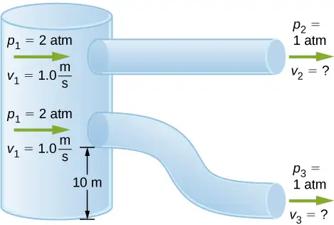
129. Fluid originally flows through a tube at a rate of \(100\:\text{cm}^{3}\text{/s}\). To illustrate the sensitivity of flow rate to various factors, calculate the new flow rate for the following changes with all other factors remaining the same as in the original conditions. (a) Pressure difference increases by a factor of 1.50. (b) A new fluid with 3.00 times greater viscosity is substituted. (c) The tube is replaced by one having 4.00 times the length. (d) Another tube is used with a radius 0.100 times the original. (e) Yet another tube is substituted with a radius 0.100 times the original and half the length, and the pressure difference is increased by a factor of 1.50.
Answer
a. \(150\:\text{cm}^{3}\text{/s}\); b. \(33.3\:\text{cm}^{3}\text{/s}\); c. \(25.0\:\text{cm}^{3}\text{/s}\); d. \(0.0100\:\text{cm}^{3}\text{/s}\); e. \(0.0300\:\text{cm}^{3}\text{/s}\)
130. During a marathon race, a runner’s blood flow increases to 10.0 times her resting rate. Her blood’s viscosity has dropped to 95.0% of its normal value, and the blood pressure difference across the circulatory system has increased by 50.0%. By what factor has the average radii of her blood vessels increased?
131. Water supplied to a house by a water main has a pressure of \(3.00\:\times\:{10}^{5}\:\text{N/m}^{2}\) early on a summer day when neighborhood use is low. This pressure produces a flow of 20.0 L/min through a garden hose. Later in the day, pressure at the exit of the water main and entrance to the house drops, and a flow of only 8.00 L/min is obtained through the same hose. (a) What pressure is now being supplied to the house, assuming resistance is constant? (b) By what factor did the flow rate in the water main increase in order to cause this decrease in delivered pressure? The pressure at the entrance of the water main is \(5.00\:\times\:{10}^{5}\:\text{N/m}^{2}\), and the original flow rate was 200 L/min. (c) How many more users are there, assuming each would consume 20.0 L/min in the morning?
Answer
a. \(1.20\:\times\:{10}^{5}\:\text{N/m}^{2}\); b. The flow rate in the main increases by 90%. c. There are approximately 38 more users in the afternoon.
132. Gasoline is piped underground from refineries to major users. The flow rate is \(3.00\:\times\:{10}^{-2}\:\text{m}^{3}\text{/s}\) (about 500 gal/min), the viscosity of gasoline is \(1.00\:\times\:{10}^{-3}\:{(\text{N/m}}^{2})\cdot\text{s}\), and its density is \(680\:\text{kg/m}^{3}.\) (a) What minimum diameter must the pipe have if the Reynolds number is to be less than 2000? (b) What pressure difference must be maintained along each kilometer of the pipe to maintain this flow rate?
Adapted from University Physics Volume 1 by OpenStax, licensed under CC BY 4.0. Access the original for free at openstax.org. Changes: converted to the web reading format of The Open Book Project.